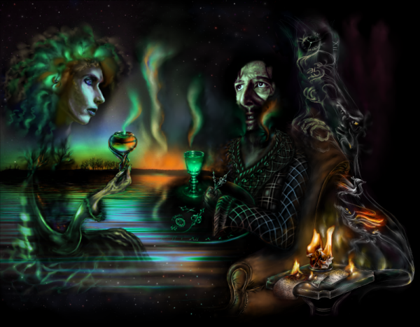

Ночь и Пачули
«At night, we swim the laughin’ sea
When summer’s gone
Where will we be»
(«The Doors»)

— Что ж.. должен признать, ты продумал все мелочи. Но неужели ты думаешь, что тебе удастся осуществить свой план безнаказанно?
— А кто меня остановит? Может быть, ты?
— Может и я. Хотя я искренне тебя понимаю…
Два темных силуэта сидели в полутьме, темноту озаряли лишь редкие всполохи огня. Пойманного, словно джинн, в лампу, но так и не прирученного. Ожидающего своего часа выпрыгнуть из зажигалки, словно чертик из табакерки.
— Неужели у тебя не осталось никаких принципов? Это же ужасно, то, что ты хочешь сделать.
Тени покрыли лицо татуировкой, превращающей говорящего в жреца древнего культа. Огненные отблески положили слой охры на его щеки, теперь они напоминали пески неведомой пустыни с высоты полета орла, нос и скулы — великие горы, а глаза — два сияющих лунных озера.
— Поверь мне — нет
— А мораль?
— Чихать я хотел на вашу мораль. Любая мораль — это клетка, куда мы пытаемся себя заключить, это шоры, которые заставляют смотреть нас через матовую призму, теряя часть красок. Как же я устал от всех этих догм… Я уважаю лишь одну догму… догму об отсутствии догм.
Лицо говорящего оставалось в тени, лишь иногда по нему змеями пробегали огненные всполыхи. От этого в темноте он сам казался Повелителем Змей. Говорил он тихо, почти шепотом, его голос звучал надломлено, иногда в нем пробивались лихорадочные нотки.
— Так это же хаос.
— Нет. Это гибкость. В гибкости — молодость и жизнь. В костности — смерть. Когда дует ветер — старое дерево ломается, а лиана лишь гнется.
— Разговоры, просто красивые теории, — сказал со вздохом человек с татуировкой из теней и сделал в темноте глоток из своего бокала.
— Поверь мне, мой замысел — не теория.
— Это меня и пугает. Но как же ты решился… Возомнил себя богом?
— Ничуть. Я прекрасно отдаю себе отчет в моих действиях и возможностях. Я знаю, что это — риск. Но так же знаю, что в конечном итоге буду вознагражден.
— Какой награды ты ждешь? — усмехнулся человек из темноты, пустыни на его лице съежились, борозды-морщины сдвинулись к озерам
— Результат будет моей наградой. Награды человеческой я не жду. Они даже никогда не узнают, кто их избавитель. Я делаю это абсолютно бескорыстно.
— Но разве твоя цель стоит жертвоприношения? Даже если в жертву будет принесена жизнь хотя бы одного человека?
— Конечно.
Двое в сумерках пили мелкими глотками темно-зеленую жидкость из высоких бокалов
— Я помню тебя другим…
— Меня или одну из моих масок?
— Теперь уже не знаю. Что ж, я вижу, теперь ты уже не отступишься от своего замысла
— Конечно же
Всполох, над огоньком плавится кусочек сахара и падает в бокал
— Но все же — есть одно но… Ты думаешь, тебя никто не остановит?
— А ты думаешь — ты можешь меня остановить?
— Ты пришел за ключами. А я — хранитель ключей. Я могу оставить тебя без ключа.
— Ты правда так думаешь?
— Ты мне угрожаешь?
Играющий с огнем рассмеялся. В смехе снова проскочили лихорадочные нотки решимости.
— Угрожать? Тебе? Помилуй… Я мог бы забрать у тебя ключи… но мне хочется, чтобы ты сам мне их отдал.. чтобы это было твоим решением
— Я не сделаю этого… у меня еще осталась какая-то совесть
— Мне жаль…
— Уходи!
— Нет
— Не уйдешь?
— Нет.
— Тогда я…
— Что?
— Мне придется выкинуть тебя отсюда, — прошептал Хранитель ключей, блеснув глазами-озерами
— Подумай хорошенько. У меня есть, что предложить тебе взамен
— Мне от тебя ничего не нужно
— Ошибаешься. У меня есть кое-что очень ценное для тебя, — голос темного человека прозвучал загадочно, но за этой загадкой чувствовалась угроза.
— Например?
— Меняю ключи на твою жизнь
— Это шутка?
— Думай быстрее, у тебя мало времени. Твоя жизнь у меня в кармане
— Сейчас шансы у нас равны
— Опять ошибаешься. Твоя жизнь у меня в кармане в прямом, а не в переносном смысле
— О чем ты?
— Противоядие. В твоем бокале яд.
— Это блеф
— Хочешь проверить?
— Я все равно не отдам тебе ключи.
— Все еще желаешь меня выгнать?
— Я не ожидал этого от тебя.
Один из них закашлялся
— Теперь веришь?
— Эти зеленые круги… мерзавец!
— Продолжай!
— Нет..
— У тебя мало времени.. не трать последние секунды! ты еще можешь вернуть свою жизнь. По рукам?
— Нет!
Темнота.
Драка в темноте.
Звон бокалов.
Темнота.
Тишина.
Включается свет.
Один лежит на полу, на спине, лицом кверху. Другой склоняется над ним.
— Я все равно их найду
— Нет… — говорит лежащий слабым голосом — Я выиграл
— Что?
— Я выиграл. Я ведь ждал тебя. Я знал, что однажды ты придешь…
— Где ключи?!
— Ключей нет…
— Как нет? Зачем тебе теперь врать?
— Ключей нет…
Склоняющийся над ним нервно усмехается
— Где они,черт тебя побери?!
— Прощай…
— Где?!
— А ты еще не догадался?.. по другую сторону замка…
Глаза лежащего сделались стеклянными… Взгляд шел сквозь склонившегося над ним куда-то в вечность
Склонившийся вздрогнул.. нечасто ему приходилось наблюдать границу между жизнью и смертью. Он отвернулся, зная, что, где бы он теперь ни был, его будет преследовать этот стеклянный взгляд
Он сел на пол и закурил сигару.
Все окутал тягучий запах пачулей.
* * *
Он выскользнул из темноты мотеля в лунный свет. Со скрипом закрылась за ним ветхая дверца. В его глазах мелькнул серебристо-зеленый отблеск полной луны. Терпкая июльская ночь после жаркого дня окутала мир одеялом, сотканным из запахов сочных луговых трав и таинственных ночных существ, которых чуят только дети, поэты или сумасшедшие.
Ни души. Тишина и монотонный стрекот цикад. Словно, пока он был в мотеле, весь мир с его шумными городами, автострадами, печалями и радостями перестал существовать и он остался один на всем свете. Он и Полная Луна, глядящая на него томными рельефными глазами. Заглядывающая в потаенные уголки души.
Кто-нибудь видел свет?
Он огляделся и прислушался. Цикады. Где-то в зарослях хрустнула ветка. Видимо, проскочило какое-то ночное животное. И вновь гулкая, звенящая в ушах, тишина.
Никого.
Он был последним посетителем этого захолустного мотеля, находящегося на обочине дороги и жизни.
Такие мотели не наносят на карты, о них почти никто не догадывается. Они словно созданы для того, чтобы в них что-то происходило под покровом ночи. Про такие мотели снимают страшные фильмы.
В темноте, за дверцей, кто-то остался. Он поборол минутное искушение приоткрыть дверцу, чтобы последним запечатлившимся кадром на сейчатке лежащего осталась полная луна. Все имеют право на романтику июльской ночи. Даже мертвые.
Словно рев приближающегося хищника, вдалеке послышалась сирена полицейской машины. Он вжался в дверь, словно желая просочиться в нее, стать частью ее ветхого скрипучего дерева. Сердце его замерло, затем заколотилось. Он даже не пошевелился. Два сердца бились в висках, десять — в пальцах рук, одно, желающее выпрыгнуть — в груди.
Где-то вдалеке, на шоссе, полицейская машина свернула в другую сторону. Его черед еще не настал.
Зеленая луна в облаке пачули шепнула — жди. И он ждал. Затем нашел свою машину, сиротливо ожидающую его на стоянке, завел мотор и понесся прочь по узкой дороге среди зарослей, которая вывела его на извилистое шоссе.
Шоссе не было извилистым. Оно оставалось все тем же, каким оно было всегда. Это он ехал зигзагами.
Противоядие не смогло нейтрализовать полностью действие яда.
Он ехал, а зеленая луна манила его за собой. Такая близкая, такая далекая. Такая родная, такая чужая. По стеклу вместе с отблесками разливался лунный блюз, по кузову ветками акации прошептали музыкальное заклинание септ-аккорды, вновь переходящие в чистую льющуюся квинту лунного света.
За несколько кварталов от дома он приглушил мотор. Пусть никто не заметит, как он приехал. Темнота завыла в переулке бродячей собакой, выгнула спину дикой кошкой, хозяйкой крыш, заплакала навзрыд ребенком, запела колыбельной песней. Лунный свет стекал по крышам, проскальзывал в щели и проемы между домами, которые на закате оставляют всю свою правдоподобность и входят в ночь черными скетчами.
Он вышел из машины и услышал крик, который, словно холодный душ, пробрал его насквозь. Луна кричала. Этот крик проникал в его душу, выворачивая ее наизнанку. Он согнулся, почувствовав внезапный прилив ужаса, доходящего до тошноты, затем, пошатываясь, выпрямился и схватился руками за голову, сотрясаясь в лихорядке, этот крик резонировал во всем его существе.
Крик медленно отделялся от луны и спускался с неба на землю. Он чувствовал, что не в состоянии мириться с этим ужасом, луна неудержимо звала его. Крик совсем отделился от луны и теперь, незримый и бестелесный, понесся по переулку, он поспешил вслед за криком и увидел, как одна черная фигура в капюшоне схватила другую и занесла над ней нож.
Крик, бесплотный, не имеющий хозяина, влился через раскрытый рот этому черному существу и теперь кричало оно, беззащитное. Кричала женщина. Девушка.
Не колеблясь ни секунды, он подбежал к двоим, схватил человека в капюшоне за руку и оттолкнул с такой силой, что тот упал на землю.
— Вон пошел, — рявкнула на него тьма из-под черного капюшона.
Человек в капюшоне поднимался, держа в руке нож
— Псих, — из-под капюшона прозвучало тремоло, что-то между криком и шепотом, — убирайся отсюда, беги, — голос черного человека дрожжал, — беги, если хочешь жить. У тебя еще есть шанс.
Он не отступил даже при виде ножа.
Некоторое время двое мужчин, один с лицом, озаренным светом луны, другой — без лица, в капюшоне, глядели друг на друга, затем тот, что в капюшоне, не проронив ни слова, бросился бежать и скрылся в темноте.
Тогда он вспомнил про маленькую темную фигурку, стоящую в нескольких шагах. Она плакала. По щекам ее текли слезы, она не могла остановиться. При свете луны он различил ее огромные синие глаза — они оставались синими даже в лунном свете. Синими и пронзительными. На ней была широкая, даже чересчур широкая цветастая туника, из-под которой виднелись маленькие тонкие ножки. Птица. Это первое, что возникло в его голове. Так он ее назвал.
Птица плакала, промокая глаза черным платком, что-то говорила очень быстро, импульсивно. В ее всхлипах невозможно было ничего разобрать. По щекам катились крупные слезы, она дрожжала. Без конца благодарила, причитала, затем снова благодарила и несла какую-то чушь.
— Ты откуда? — спросил он, когда она на минутку умолкла
— Я возвращалась и решила сократить путь. Боже, я могла погибнуть!
— Где твой дом?
— Где-то здесь. Отведи меня на свет, прошу тебя.
Он взял ее за локоть и повел туда, где был виден свет фонарей. Она без конца говорила и шла так медленно, что в какой-то момент у него появилось желание взять ее за волосы и потащить туда, где свет.
Он поймал себя на том, что не мог заглянуть в ее огромные синие глаза. От каждого такого взгляда словно сама душа взрагивала и съеживалась.
Переулки закончились, они оказались среди оранжевой реки ночных фонарей.
— Дальше я доберусь сама. Не знаю, как благодарить.
— Ни к чему.
Он попрощался с Птицей и пошел прочь, не оборачиваясь, пока не растворился в темном переулке. Затем сделал несколько кругов, прежде чем добраться домой.
* * *
В тишине ключ повернулся в замке. Дверь приоткрылась. Он вошел в квартиру, не зажигая свет, упал на диван, закрыв лицо руками. Затем сел на диване и прислушался. В левом углу у окна, словно дремлющий хищник, в любую минуту готовый пробудиться, расположился черный рояль, который занимал большую часть комнаты.
Прозрачная занавеска тихонько колыхалась на легком ночном ветру, вышитые на ней листья шелестели, но никогда не опадали.
В стеклянной двери открытого балкона отражался силуэт соседа, который стоял на смежном балконе и глядел на луну.
— Странная вещь, — задумчиво проговорил сосед, — в обычной жизни стоит нам узнать, что человек — убийца, мы желаем, чтобы он оказался за решеткой, не так ли? А стоит только этого человека сделать главным героем сценария — так мы почему-то начинаем ему сопереживать. Если за ним погоня, мы желаем, чтобы он от нее ушел. Даже если мы почти ничего не знаем. А стоит ему совершить маломальски положительный поступок, он перестает быть для нас отталкивающим. Как думаешь?
Сосед был сценаристом.
Сидящий в темноте не видел лица соседа, видел лишь как луна серебрит его волосы.
Он почувствовал, как по его телу пробежала тревожная волна. Сидя на диване и прикрыв глаза, он прислонился спиной к стене и прислушался к приглушенным звукам ночи.
— Что это будет? Детектив? — спросил он, наощупь доставая из-под изголовья дивана бутыль с зеленой жидкостью
— Нет… хотя, может и да… в каком-то смысле, — ответил сосед все тем же задумчивым голосом
— Очередная абсурдно-параноидальная история?
— В точку.
— Убийца будет пойман? — спросил он, сделав из бутыли глоток темно-зеленой жидкости.
— А как ты думаешь?
— Может на этот раз ты дашь ему шанс?
— Зачем? Это не по закону жанра. Как думаешь — что будет дальше?
— Я всего лишь зритель. Зачем мне забегать вперед?
Жидкость не унесла полностью его тревоги, лишь сгладила едкие диссонансы в настойчивое тремоло и стрекот цикад.
— Жаль, что сценарий нельзя написать от первого лица, чтобы усилить эффект.
— А ты смог бы писать от лица того, кто убил?
— Мне было бы интересно войти в его шкуру.
— Вопрос не в том, получится у тебя или нет, а в том, не заиграешься ли ты в эту роль.
Он бросил взгляд в угол комнаты, желая разбудить черный рояль.
— Это опасно? — спросил сценарист с усмешкой
— Хочешь проверить?
— И все-таки..? Ты думаешь, что от первого лица не получилось бы достоверно?
— Есть только один способ описать это достоверно. Но назад дороги не будет. Этого хочешь?
Сценарист промолчал.
Чтобы успокоить нервную дрожь в руках, он глубоко вздохнул и сделал глоток из бутыли. Затем сел за рояль, начал играть. Он играл каждую ночь. Соседи сначала мучались, потом привыкли. Или просто он перестал их замечать. Как, в сущности, и все остальное.
Он был лунатиком. В определенном смысле. Луна и звезды будили его, манили его, не давая заснуть. Лишь спускалась ночь, он садился за рояль и начинал играть. Шло время, шли секунды и он слышал отдаленное пение. Ему казалось, оно доносилось с луны. Это луна напевала под его музыку. Сегодня пения не было слышно. Луна ответила ему тишиной.
«Что-то пошло не так», — подумал он.
Он видел, как руки его играли отдельно от него, левая и правая, как два разных человека, которые лишь смутно подозревали о его существовании. Он почувствовал, что был над ними не властен. Луна не пела.
Он замер и прислушался, словно желая застать тихое пение врасплох. Тишина.
Он бросил недоверчивый взгляд через приоткрытую дверь в прихожую. Туда, где над кучей старого хлама нависали антресоли. При мысли об антресолях он взрогнул. Точнее, при мысли о том, что там хранится.
В ночной тишине в замке повернулся ключ. Теперь в обратную сторону. Он вышел из квартиры.
На лестнице он столкнулся с Рыжим, который спускался с крыши.
— Всем безнадежным романтикам чудесной ночи, — бросил Рыжий на ходу
— Как там на крыше? Свежо?
Рыжий беззаботно кивнул и бросил взгляд на гитару, висящую через плечо. Вечно юный июльский Рыжий, бродящий по крышам. С вечно новой бесшабашной идеей и сумасшедшими выходками, вечно проживающий каждую секунду, выпивающий ее всю, до дна, жадно вбирающий ее глазами, ушами, кожей, кончиками волос… Еще не растративший среди миллиона мелочей свежесть чувств, не покрывшийся мутной пленкой обыденности, хранящий в душе секрет жизни. Тот самый Рыжий, с вечными круглыми очками с красными стеклами в цветастом балахоне, распевающий серенаты бескрайней свободе. Рыжий, как тебе удается сохранять эту вечную легкость? Ты бродишь по крышам вместе с дикими кошками, идешь по разливающимся квартам и квинтам как по ступенькам до самой луны, туда, где живет вечное лето.
— Где твоя машина? — спросил Рыжий.
— Бросил ее у друга. Я сегодня слишком пьян, чтобы сесть за руль. Почему ты спрашиваешь? — в его душе снова проснулось задремавшее беспокойство.
— Я думал ты попал в аварию, — ответил Рыжий с налетом безразличия.
— А должен был?
— Я не видел отражения фар. Решил, что на твоем пути вырос фонарный столб. Выскочил из-под земли словно чертик из табакерки. Или что ты угодил в канализационный люк, — сказал Рыжий, равнодушно пожимая плечами.
— Сегодня на редкость все люки обходили меня стороной.
«Вот незадача. Один-таки заметил отсуствие моей старушки», — подумал он.
— Недавно здесь была полиция, — непринужденно бросил Рыжий, держа руки в карманах.
— Полиция? С чего бы вдруг? — он придал своему голосу как можно более равнодушный оттенок.
Он вздрогнул, облизнув губы.
— Думаю, из-за этой соседки, у которой на окне росли гартензии. Которая недавно повесилась. Совсем выжила из ума. Надо же, кто бы мог подумать.
— А может, это убийство? Как ты думаешь?
— Я об этом не думаю. Это не мое дело. Пусть полиция думает, — ответил Рыжий
— У них есть версия?
— Они сочли ее умалишенной.
— Меня одно беспокоит…
— Что именно? — спросил Рыжий, жуя зубочистку
— Кто теперь будет поливать ее гартензии?
* * *
Спустившись по лестнице, он вышел из дома в терпкую июльскую ночь, нашел свою машину и сел за руль.
Вместе с лунным светом в его душу влилась безмятежность. Город погрузился в сон, в маленькую смерть между смыканием глаз и звоном будильника.
Он откинулся на спинку кресла и прикрыл глаза. Затем стряхнул с себя налет дремоты и завел двигатель. Волнение пробуждающегося механизма передалось ему через кончики пальцев.
Одно его беспокоило. У него не было ключа. Но он уже не сомневался. что ему ничто не помешает исполнить свой замысел.
Что означала фраза — ключ остался по ту сторону замка?
Он тщетно пытался понять смысл фразы пока несся по полуночному шоссе, купающемуся в оранжевом свете фонарей.
Яд подействовал слишком быстро, быстрее, чем он ожидал. Это надо учесть на будущее.
Он свернул с шоссе в темный переулок, в котором царило запустение. Выходя из машины он услышал отдаленные звуки карнавала. Или бродячего цирка? На доли секунды он пожелал всей душой переместиться туда, где словно диковинные цветы раскрывались цирковые шатры, из них лился пьянящий нектар волшебства и вечного детства и как пчелы-труженники появлялись фокусники, маги и чародеи. И Царица Клеопатра.
Как же он хотел переместиться в бурлящую Жизнь из ночного застывшего сумрака!
Но все это казалось сейчас невообразимо далеко.
Старый перекошенный дом задумчиво глядел на него своими окнами со стеклами, раскрашенными разноцветными красками в сумасбродные цвета. У калитки стоял почтовый ящик, напоминающий обжору, подавившегося письмами. Писем было так много, что они, вперемешку с просроченными счетами за прошлые месяцы, если не годы и цветастыми рекламными проспектами, высыпались из него. Часть из них была уложена на земле ровными стопочками. Наверное, местный почтальон давно уже потерял надежду на то, что хозяева заглянут в почтовый ящик и начал складывать письма на землю, накрывая сверху пленкой от дождя и прочих невзгод. Жаль, что не существует пленки от времени.
Однажды, когда деньги в этих краях окончательно утвердятся в качестве основной государственной религии, на этом месте, словно ядовитые грибы, вырастут удушающие небоскребы и сметут этот клочок старого мира, улыбнутся белоснежной улыбкой и скажут — «ничего личного, только бизнес». Но не сейчас, не сейчас…
Несколько раз он позвонил в самодельный звонок, приделанный к забору. Ответа не последовало. Тогда он привычным движением отогнул доску в заборе, так что образовался лаз, и, пробираясь сквозь зарослей гигантской кукурузы добрался до двери. Постучал. Однако ему снова ответила тишина.
Ну где же Механик? Где его черти носят?!
Тогда он толкнул дверь, которая со скрипом отворилась. Никто даже не удосужился ее запереть.
Так жил Механик — его старый приятель, который создавал для него чудо-машину.
В доме царил полный хаос. Часть стен была оклеена вырезками из старых газет. На полу в коробках валялись детали, самодельные пульты для работы со звуком и разные премудрости, покрытые слоем пыли. Казалось, они уже проросли и пустили корни — разноцветные провода, торчавшие из коробок во все стороны.
Наощупь он добрался до комнаты Механика, освещенной тусклой лампочкой. Механик сидел в наушниках, покачиваясь в такт музыке. В одной руке он держал паяльник, в другой какую-то скрученную деталь, на которой сверкали капельки припоя. По всему дому распространился запах канифоли.
— Противоядие принес? — спросил Механик, кинув беглый взгляд на вошедшего.
Вошедший кивнул.
— Я уж думал, не переживу сегодняшнюю ночь. Ждал тебя как бога. Не могу паять, когда так чертовски руки дрожжат.
Вошедший начал шарить по карманам. Он помнил, что противоядие было с ним, но не мог вспомнить, в какой карман он его сунул. А может.. выронил по дороге? Нет! нет.. или оставил в машине? Или выпил все сам, чтобы нейтрализовать действие яда, который подлил в бокалы хранителю ключей и себе? Ведь он же, черт возьми, не знал, какой из бокалов выберет хранитель. А рисковать он не мог. Он почувствовал, как снова подступило волнение, словно хищник, крадущийся за ним по пятам. Наконец нашел пузырек в правом внутреннем кармане. Когда-то давно он отравил Механика. Дал ему яд, от которого Механику приходилось постоянно принимать противоядие. В обмен на противоядие Механик делал Машину.
Глаза Механика блеснули, он дрожащей рукой вырвал у вошедшего пузырек и зажмурившись, проглотил его содержимое. Несколько секунд поморгал, потряс головой.
— Все, жизнь продолжается… Ну что, Отравитель? Пришел поглядеть, как мои успехи. Работаю в поте лица, не покладая рук, как видишь.
— Долго еще?
— Не думаю. Осталось не так много. Если бы не заказы на всякие штуковинки от разных музыкантов, справился бы на прошлой неделе. Но ты меня, дружище, тоже пойми. Я ж не манной небесной питаюсь. И свет пришлось провести от соседей — меня отключили за неуплату добрых месяца три назад.
Яд и противоядие у него появились от Царицы Клеопатры — артистки бродячего цирка. Это она продала ему таинственную банку, в которой жило Нечто. В ту ночь, стоя под навесом шатра, он долго вглядывался в мерно перекатывающееся нечто в банке с темными стенками, не имеющее глаз, но заглядывающее ему в самую душу. Что это? Медуза, питающаяся его ночными страхами? Сны русалок, крылышки летучих мышей? Души утопленников в болотной воде? Он чувствовал, что оно живое. Днем под лучами солнца оно вырабатывало смертельный яд, а ночью, в лучах луны — противоядие. Так объяснила циркачка. Случайный прохожий посмеялся над ним, когда он купил эту нелепую штуку за целых десять зеленых, она и гроша ломаного не стоила. Старый хлам, напиханный в банку. К которой была сверху приделана ручка, как к фонарю. Она даже не продавалась. Висела в качестве декорации, подсвечиваемая светом тусклой лампочки. Но он настоял на том, чтобы забрать ее с собой. Царица Клеопатра сначала выразила недовольство, сказав, что эта древнейшая реликвия не продается, но потом позволила себя уговорить и в итоге сговорились на десять зеленых.
Он не стал держать его дома — он не мог долго выдерживать пристального взгляда в затылок — и отнес его в лес, в заросли, в его секретное место, куда дорогу знал только он. Там банка висела на ветке, медленно покачиваясь из стороны в сторону и вращаясь на ветру. В ней жил Мистер М, — так он называл то, что было в банке. Недалеко от тех зарослей был пруд. В нем росли лунные лилии и жили жабы. И голоса.
Он чувствовал что-то родственное, с тем, что жило в банке. Луна так же его излечивала, а день опустошал.
— Какого черта ты опять к нам пришел?! А ты.. ты же обещал, что этот к нам никогда больше не придет. Ты сказал, что на порог его не пустишь! Вон пошел, слышишь! Вон! Ты хочешь окончательно разрушить нашу жизнь? Что ты наделал…
На пороге стояла заспанная Шакти-Покахонтас, в домашних тапочках и заплатанном халатике в цветочек.
— Только не устраивай истерику, — огрызнулся Механик
— Ты мне солгал.. ты всегда мне лжешь. Этот яд.. это же навсегда! До чего ты докатился, посмотри на себя, ты когда хоть брился в последний раз?
В ее глазах проскользнула боль, она не выдержала и начала громко плакать навзрыд, проклиная все на свете. Механик отложил паяльник, подошел к девушке, встряхнул ее за плечи. Она с силой оттолкнула его. Тогда он обнял ее, крепко-крепко, и шептал ей что-то, пока она не успокоилась.
— Сколько это все может продолжаться? — спросила она почти спокойно, не ожидая ответа. Она его знала.
— Иди спать, — прошептал Механик.
— Вот так оно и зациклилось.. теперь это никогда не кончится. Круг замкнулся. Ты понимаешь? А ты? Еще нет? Это ведь ты ходишь по кругу… — бормотала она себе под нос, глядя на вошедшего. Потом как-то странно рассмеялась, — и это все происходит потому, что кто-то боится себе в чем-то сознаться… Кто-то что-то натворил, а?
Он поежился. Она не может знать о хранителе. Нет, конечно же, она не знает. Она имела в виду что-то свое.. или яд.
Шакти продолжала смеяться, но это был лихорадочный смех, подобный чиханию, от которого так просто не отделаешься. Она вернулась к себе в комнату. В комнате послышался какой-то шорох, что-то скрипнуло. Затем из комнаты донеслись протяжные звуки ситара. Шакти перебирала струны.
Механик только пожал плечами и вернулся к своему занятию.
Глядя на Механика и Шакти, он вспомнил, что когда-то, летом, миллион лет назад, может в другом мире, когда они дремали под солнцем, Шакти плела венок из цветов. Чьи-то сияющие руки тянулись к медовым яблокам в лучах солнца. Аромат пачулей зажигал солнце в каждой душе, солнце жило в каждой капле эфирного масла, если глядеть на просвет, солнце жило у них внутри. Тогда Шакти-Покахонтас одобрила его план.
— Шакти, ведь ты же тем летом меня поддержала! — крикнул он перебирающей струны, — ты же знаешь, для чего мы делаем эту Машину, черт тебя дери! Когда все случится, Механику уже не понадобится противоядие
Шакти снова появилась в дверях, откинув бамбуковую занавеску
— Только вот то лето кончилось. Оно давно кануло в прошлое, и теперь не вернется.
Он подумал — может, через миллион лет они, а может уже не они, снова будут собирать медовые яблоки солнца, плести венки из цветов и беспечно любить весь мир. Возьмутся за руки и почувствуют — что я, это ты,ты это я, и все мы вместе, и все мы — Солнце. И наше лето не кончится никогда. Однако же, теперь снова настало лето — почему все не вернулось?
— Сейчас июль, Шакти. Лето вернулось, черт возьми!
— Вот только это уже не наше лето…
— Шакти, я тебе обещаю. Как только мы сделаем Машину, наше лето вернется. Мы станем прежними!
— Мы остались там!
— Мы здесь!
— Мы тени! Мы умерли! Мы восковые мумии, которых выкинули из подземного склепа, потому что мы не внесли плату. Нам даже за свет платить нечем!
— Мы живы. И мы создадим Машину. Я тебе обещаю.
— Все, убирайся вон. Убирайся!
Он повернулся к двери и вышел в ночь, оставив на столе Механика триста зеленых. Да будет свет.
* * *
Прошла ночь. А может, и несколько ночей. Наступила следующая. Он давно потерял счет ночам.
Он вышел на балкон, но соседа по балкону из смежной квартиры не видать. Куда делся Сценарист? Почему в его квартире царит такая звенящая тишина?
Он стоял неподвидвижно и глядел на луну. А она глядела на него. Он не заметил, как на общем балконе, куда выходит лестница, появился темный силуэт.
— Эй, там, на балконе! Сегодня ночь просто потрясающая, не правда ли?
Он обернулся и узнал Птицу. Вот уж кого он не ожидал встретить вновь.
— Что ты здесь делаешь, — спросил он удивленно?
— Живу. Поднималась к себе домой. Так мы, стало быть, соседи? Надо же, кто бы мог подумать! Шикарно!
В ней ничего не осталось от того трясущегося испуганного существа той далекой ночи.
Ничего не говоря, она перелезла через балконную ограду и пошла к его балкону по карнизу, держась за трубу, перепрыгнула на лестницу на стене дома и залезла на его балкон. Она даже ни разу не глянула вниз, словно знала, что умеет летать и если сорвется — расправит крылья и вспорхнет. Земля была далеко-далеко, но это ее ничуть не смущало. Добравшись до его балкона, она села на бортик не держась.
— Ты всегда это проделываешь? — спросил он растерянно
— Что?
— Бродишь по карнизу
— Нет. Только сейчас, когда я увидела тебя, это взбрело мне в голову.
Удивление и растерянность потихоньку рассеялись, ему стало не по себе. Он смутно ощутил ее присутствие как вторжение. Вторжение в его мир.
В это время Птица, не спрашивая разрешения, перешла с балкона в комнату. Он поежился.
— Какой у тебя шикарный рояль.. интересно, как он сюда пролез? Он такой большущий! Сыграй мне. Ну пожалуйста…
— Я не умею, — ответил он.
— Это как так не умеешь? А кто же тогда играет? — девушка, глядя на него своими огромными синими глазами.
— Играю вовсе не я. Играет рояль, ведь он живой, а я только одалживаю ему руки. Поскольку без них рояль не может звучать.
— Живой, — эхом повторила девушка
— Луна вдыхает в него жизнь.
Он сел за рояль и начал играть заклинание для луны.
— Так это ты играешь каждую ночь? — спросила Птица, — Эта музыка настолько.. странная хотя и чудесная, что я думала, что она мне чудится, и я подпевала.
— Так это ты пела каждую ночь, когда я садился за рояль?
— Нет. Пела луна. Я лишь одалживала ей свой голос, — передразнила Птица.
— Я это чувствовал.
Птица усмехнулась и на ее и на ее щеках появились милые, почти детские ямочки.
— Ты поешь? Я имею в виду, где-то еще?
— Да. Недавно я получила роль в новом мьюзикле «Абсурдиада».
Он играл, она села на крышку рояля и пела. Так продолжалось несколько вечных секунд, в течение которых они смогли выйти за грань времени. Затем он остановился.
— Тебе не грозит опасность?
— Опасность? — удивленно спросила Птица
— Но ведь в ту ночь..
— Ах да.. я и забыла. Это был… мой бывший поклонник. Не бери в голову. Теперь мне ничего не грозит.
Он не стал спрашивать почему. Почувствовал, словно кто-то закрыл дверцу в этот вопрос.
— Иногда мне кажется, что луна соткана из пачулей, — сказала Птица
— Подожди, — сказал он. На кухне не включая свет наощупь он нашел бутылку «Зеленых слез пачулей» и два зеленящихся при свете луны бокала.
Стоя у окна, он глянул на свои руки и ему показалось, что на его пальцах остались кляксы от черных клавиш рояля. Он зашел в ванную с бокалом в руке, не включая свет. Смыл кляксы с пальцев. Когда выходил, почувствовал, что что-то не так.
Вдруг его передернуло. Он не увидел своего отражения в зеркале над раковиной в слабом свете луны сквозь дверь.
Вернулся.
Вспомнил суеверие, что в ночной темноте нельзя смотреть на себя в зеркало, ибо в ночном зеркале живут духи, которые выпивают жизнь глядящего. Но он посмотрел.
Отражение было на месте.
Бросая вызов темноте, он подошел к зеркалу и чокнулся со своим отражением.
В какой-то момент ему показалось, что оно чуть дернулось.
Когда он выходил из ванной, ему захотелось обернуться и проверить, на месте ли отражение. В то же время боялся, ему казалось, что у него сердце остановится, если оно исчезнет.
— Что ты там увидел? — окликнула его Птица.
Он так и не вернулся поглядеть на отражение. Только вдруг ему стало интересно, что находится в ванной за зеркалом. Он его никогда не снимал. И есть ли там вообще что-нибудь? Вдруг там нет стены, есть только одна зияющая дыра в пустоту?
— А что если луны вообще не существует? — задумчиво прошептала Птица. День и ночь — как виноградина в стакане. То всплывает, то опускается. Как всплывает, наступает день. Наберет воздуха, опустится — наступает ночь. Пузырьки в бокале — звезды. Луна — отражение солнца в дне бокала, поэтому мы никогда не видим ее обратную сторону…
* * *
Наступила следующая ночь. Он поднимался по лестнице и снова столкнулся с Рыжим. Рыжий спускался с крыши, по ночам он бродил по крышам.
— Что это за особа приходила к тебе вчера по карнизу?
— Это Птица.
— Ну-ну, — усмехнулся Рыжий
— А что такого?
— Да ничего.. — Рыжий посмеивался над ним.
— Нет уж, приятель, говори!
— Ты так скоро всех друзей забудешь, она для тебя станет всем.
— Вот еще! Ну ты и придумал. Я с ней почти не знаком. Она восхитительно поет… но я не позволю никому или ничему стать для меня всем!
— Это мы еще посмотрим, — сказал Рыжий и прошмыгнул мимо него.
Он раздобыл на черном рынке кое-какие детали для Механика, чтобы ускорить процесс рождения Машины. Они обошлись ему в кругленькую сумму, вряд ли Механик мог бы себе позволить их приобрести, думал он, вытаскивая из кармана связку ключей.
Ключ повернулся в замке, он вошел в квартиру, не зажигая свет. Он никогда не зажигал свет. Может, у него тоже свет давно отключили? Когда он в последний раз оплачивал счет?
Закрыв за собой дверь, он бросил нервный взгляд на антресоли.
На антресолях в банках жили кошмары. Точнее, раньше эти кошмары являлись к нему во сны каждую ночь, пока он не поймал их в банки, словно джиннов. Когда-то он отвез их далеко-далеко и закопал в землю. Но однажды ночью вновь увидел кошмар. Когда приехал на то место, увидел, что та земля была перекопана экскаватором. После этого он предпочел держать свои кошмары в банках на антресолях, куда никогда не доберется никакой экскаватор. Банки были не простыми — они были герметичными. Иначе кошмары могли прорости наружу. Одна банка была закрыта неплотно, он верил, что в ней была небольшая щелка, из нее кошмар пророс к соседке с гартензиями на верхний этаж, от чего та и повесилась. Всю ту ночь напролет он просидел у двери, напряженно вслушиваясь в шаги — не идет ли за ним полиция, чтобы арестовать за хранение кошмаров. Когда он выходил из дома, он тщательно мыл руки и брызгал адеколоном карманы и складки одержды, чтобы полицейские собаки не учуяли запах кошмаров из банок. Он периодически проверял целостность банок. Еще была опасность дать доступ воздуха — тогда кошмары начали бы бродить, пока не получилась бы мерзкая убийственная кошмарова бормотуха. Он очень боялся, что эти кошмары, забродив, вырвутся в реальность — тогда они ее изменят и уже ничего не поможет.
* * *
В эту ночь Птица точно так же залезла к нему на балкон, она шла по карнизу, держа два бокала и бутылку с «Зелеными слезами пачулей». Снова он играл, она сидела на рояле и пела, держа в руке зеленящийся бокал.
— Над чем ты сейчас работаешь? — спросила Птица, делая глоток из своего бокала.
Он замялся, мысли его вернулись к Машине, над которой колдовал Механик.
— Что ты имеешь в виду? — спросил он недоверчиво
— Я хотела сказать, что за музыку ты сейчас пишешь?
Она кивнула стопочку нот, написанных от руки.
— У меня за стенкой живет сценарист. Сосед мой. Я пишу музыку на его сценарий.
— А можно прочесть его?
Он встал из-за рояля и вышел на балкон. Позвал сценариста, но в соседней квартире было темно и тихо. Никого.
— Хм.. странно. Его уж второй день как нет. Может, уехал куда-то? Я так привык, что он всегда здесь, за стенкой, стоит на балконе. Как только он вернется, я тебя с ним познакомлю.
— Можно глянуть на ноты? — попросила Птица.
Он кивнул на тумбочку.
Птица открыла тумбочку, там лежали помятые страницы сценария «Ночь и пачули.».
— Оно?
— Странно.. не помню, как он там оказался. Я думал, там лежат ноты.
Она выжидающе поглядела на него. Он пытался вспомнить, в какой момент сценарий оказался у него в тумбочке.
— Все верно, — он кивнул, — я взял сценарий, чтобы сделать пометки, в каких местах вступает ситар…
Птица прищурилась, переводя взгляд со сценария на стопку нот. Достала из стопки листок, на котором были какие-то карандашные пометки. Покачала головой.
— Меня вот что удивляет, — проговорила задумчиво девушка
— Что именно? — спросил он. Волнение снова подступало, но он не мог понять его причин
— Сценарий ведь писал сосед, а ноты — ты. Верно?
— Да. И что с того?
— Почему сценарий и ноты написаны одним почерком?
Она недоверчиво поглядела на него. На секунду повисло молчание. Затем она рассмеялась.
— Вот это да, у вас с соседом одинаковый подчерк! Я еще такого никогда не встречала.
Он пожал плечами.
— Вероятно, мы почувствовали этот сценарий одинаково, в почерке отразились наши чувства и мысли.
Птица прочитала сценарий до конца. Несколько минут она о чем-то думала и он ее не тревожил.
— Где вы собираете ставить это?
Вопрос застал его врасплох
— Для кого вы это пишете?
Он даже не знал, что ответить. Как он мог до сих пор об этом не задумываться? Что будет с произведением дальше, после того, как они его создадут. Неужели сосед никогда не говорил ему об этом? А он.. не спросил? Нет, наверное говорил, просто он уже забыл.
— У тебя заключен с кем-то контракт?
— Нет, — просто ответил он
— Тогда можно я отнесу его моему режиссеру?
Он вновь пожал плечами
— Делай как хочешь. Думаю, сосед будет не против. А меня дальнейшая судьба моих нот мало интересует.
— Ты чудной. Неужели ты не хочешь стать знаменитым?
— Знаешь.. я уже был знаменит.. когда-то давным давно. Ты можешь этого не помнить, столько лет прошло с тех пор… Это теперь я живу как затворник. И мой сосед тоже.
Птица не стала задавать вопросы.
Птица приходила каждую ночь. Они никогда не зажигали свет, играли музыку в потемках. Они никогда не задавали друг другу лишних вопросов. И не говорили о прошлом. Для них существовало только лето — их вечный июль.
Однажды где-то на краю сознания у него мелькнула мысль — почему Птица как и он не любит включать свет? Может, она уродлива? Или преступница, скрывающаяся от правосудия? Ответ не нашелся, вопрос тут же забылся, он запил его очередным глотком слез пачулей.
* * *
Так шли ночи. В одну из ночей он вновь наведался к Механику. Словно вор, проник через черный ход.
— Шакти спит? — спросил он шепотом
Механик кивнул, соединив ладони и наклонив к ним голову, изображая спящую Шакти.
— Противоядие принес?
— Сомневаешься? А если нет?
— Давай, не тяни. Не издевайся. И так не по себе.
Он вынул из кармана флакон и протянул Механику.
— Как Машина?
— Сам удивляюсь, что это наконец свершилось. Вчера закончил твой «Пылесос».
— Как думаешь, он получился достаточной мощности?
— Достаточной для чего…? — спросил Механик.
— Для того, чтобы твой огромный «Пылесос» мог вытянуть кошмары из всего мира. Чтобы закончились войны и люди вспомнили бы друг о друге.
— Должен. Я сделал на совесть. Заходи как решишь устроить проверку. Только уже не сегодня. Шакти съест меня живьем.
Он прислушался. Ему показалось, что Шакти проснулась и сейчас так же вслушивается в темноту, и ждет, когда же наконец он покинет их дом.
Когда он осуществит свой замысел, она обязательно его поймет. Она ведь тоже станет счастливее. Вместе с этим огромным-огромным миром.
Но есть обратная сторона. Понадобится «подопытный кролик», на ком придется провести испытания.
«Жертвоприношение», как сказал Хранитель Ключей.
— Приду в другой день.
— На ком опробовать будем ты уже придумал? Нашел добровольца?
Он вздрогнул. А если Механик в последний момент откажется участвовать? Когда узнает все до конца..
Механик догадывался, что эксперимент будет опасным, но не догадывался — насколько.
Нет. Не откажется. Он не сможет отказаться, не сможет отвести взгляда..
— Еще нет. Найду.
«Только вряд ли это будет доброволец, » — подумал он.
— Жаль, Доктор Им уехал. (Dr. Eam — «dream»). Он бы точно подыскал нам кого-нибудь среди своих чудных пациэнтов.
— Уехал?
— Сейчас времена уже не те, приятель… Не то, что раньше, когда я для тебя ваял всякие музыкальные прибамбасы, а ты еще не был звездой, так скать.. Когда все было легко и просто. Теперь всей их компании вслед за Иллюзионистом и Звездным Папой пришлось перебраться на Юг. Ну ничего, и оттуда их погонят однажды. Да и поделом, я считаю. Придется им строить для себя оранжерею. Иначе уже не перезимуешь… Зимы холодные начались. Это, видать, из ящиков холод, на которые тогда обменяли наших ребят. А что _эти_ думали, нам это не аукнется?
— Они об этом вообще не думали. Они прибыли считали.
— Гады. Да и мы тоже хороши. Мы ведь тогда и вправду верили, что наши цветы кому-то помогут! Да ничерта подобного. Ничего мы не добились тогда, слышишь! Надо было не следовать заветам Шакьямуни и не петь о любви, а брать в руки автомат, и гнать этих торгашей к чертовой матери! Тогда бы у нас был реальный шанс вернуть наших мальчишек… А теперь что? Они нас теперь продают, капля за каплей. Это уже не наш мир, понимаешь? Наш мир остался там. Сейчас они для нас, племени Последних Охотников за Верой в Свободу, строят резервации, благо, опыт есть, а потом совсем нас вычеркнут, тех, кто не поклоняется их Зеленому Богу. Мы доживаем наши последние дни.. А потом и нас под благовидным предлогом в цинк.. А все потому, что мы им ничего не должны. А они этого не любят, когда ты им ничего не должен. Послушай, приятель, мы же сейчас самые богатые люди в этих краях!
— Наряду с цветными, живущими на пособия.
— В точку.
— Ладно, не сгущай краски. Не зря мы делаем с тобой Машину. Если уж не песни о любви, и не автоматы, так Машина сделает свое дело… В наших с тобой силах исправить положение вещей.
— Но даже наш Пылесос уже не вернет мальчишек! — ответил механик
— А те, кто вернулись..
— Те, кто вернулись, научились убивать.. они тоже не вернулись. В каком-то смысле.
— Я знаю.. зато, Машина вернет всех к жизни. Понимаешь?
— Эх, вернуть бы прошлое.. я бы для тебя такую штуковину сваял, какая тогда никому не снилась, я тогда столько всего еще не понимал в тайне Звука. Слушай, может, и нам на Юг податься? Нет, не ради этих Имовых штучек, просто там еще не настолько все потеряно.. Мы с тобой, и ты и я, столько ошибок наделали, столько начудили, да и крышей уехали немного, но ведь, согласись… все искренне делали, все от души, не считая зеленые бумажки. И глупости, и те, искренне делали, зачастую ради каких-то высоких идеалов.
— Это уж точно.
— Я же классный электронщик, черт возьми. Нет, я не хвастаюсь, это так. Если бы захотел, мог бы давно сколотить состояние. Да вот только… человек я не той закваски. Поехали на Юг, а, амиго?
— Поехали. Только лучше уж на край света.
— По рукам.
— Ладно, дружище. Вернусь как только подыщу «добровольца».
Он незаметно выскользнул, словно ночная тень. Где-то в ночи тихонько плакала в подушку Шакти.
* * *
Когда он возвращался домой, душа его была не на месте. Неужели это от мысли о предстоящей проверке Машины? Нет дело в чем-то еще.
Что-то случилось. Что-то вот-вот случится. Он чувствовал это кончиками пальцев, когда открывал дверцу машины. Невидимая гроза вот-вот должна была разразиться, испепелить его молниями, а затем накрыть черным разъедающим дождем с ног до головы, превратив его в ночную тень, в тень среди теней, которую унесут вникуда первые солнечные лучи.
Что-то случится. Причем, очень скоро. Тщетно он искал причину своему волнению, которое все наростало. Когда он вставил ключ в замок, почувствовал, что руки его дрожали. В квартире кто-то был. И что самое ужасное легкий звук доносился… оттуда! сверху..
С антресолей!
Неужели полиция пришла его арестовать?
Нет, это не полиция…
В какую-то секунду ему больше всего на свете захотелось убежать и никогда не возвращаться.
Он сделал над собой неимоверное усилие и вошел в квартиру.
И застал врасплох Птицу, которая полезла на антресоли.
Он схватил ее за руку, но было поздно. Она уже держала в руках пустую банку и пыталась открыть. К счастью не успела.
— Положи ее, — в ужасе закричал он, — не трогай! Убирайся отсюда! Что ты наделала! Кто тебе, черт возьми, разрешил туда лезть?!
Он разозлился и оттолкнул ее. Она сильно ударилась об стену, но он, не обращая на нее внимания, начал проверять целостность и герметичность банок.
Птица смотрела на него огромными глазами.
Затем он вспомнил про ее существование. Повернулся к ней и посмотрел на нее таким жутким взглядом, что она съежилась в комочек. Подошел к ней, она дрожала, но не попыталась убежать, да и бежать было некуда. Он схватил ее и начал трясти за плечи
— Зачем ты туда полезла? Кто тебе разрешил?!
— Я.. — бормотала Птица, — я лишь хотела сделать у тебя маленькую уборку, у тебя слишком пыльно.
— Не лги мне! Ты думаешь, я поверю в эту чушь? Уборка на антресолях! Кто тебе вообще разрешил хозяйничать в моей квартире? Какого черта ты ведешь себя здесь как у себя дома? Почему черт возьми ты никогда не стучишься, когда приходишь? Ты здесь гостья, ты здесь чужая, все понятно?!
— Понятно, — пробормотала Птица слабым голосом, — но я думала..
— Что ты думала? Что ты вообще могла думать?!
— Что я тебе не чужая…
— Ты вторглась в мою жизнь как…
— Как кто?
— Ладно, не важно. Зачем ты это сделала? Только не пытайся больше соврать мне.
Вопреки его ожиданиям, она ответила
— Я давно заподозрила, что на антресолях что-то есть, поскольку ты периодически бросал туда довольно странные взгляды. Я знала, что ты там что-то хранишь… Но я думала, дело в чем-то более банальном. Может, в том, что ты — преступник… Но я не ожидала, что ты…
— Что я что? — спросил он резко
— Ничего, — замялась она
— Нет уж, продолжай, раз начала.
— Что я.. что? Ну?
— Да я сама не знаю… я хочу понять тебя..
По ее щекам потекли слезы, и это вмиг разрядило ту разноть потенциалов, которая возникла между ними и угрожала уничтожить обоих невидимой шаровой молнией.
Ярость отступила, ему вдруг стало невообразимо жаль Птицу, он обнял ее с той теплотой и нежностью, которую никогда ни к кому не проявлял. Достал платок и промокнул ее глаза, вытер слезы со щек.
— А я и вправду взяла тряпку, чтобы вытереть пыль, — всхлипывала она, — но если честно, я искала благовидный предлог, чтобы туда заглянуть. Расскажи мне, в чем дело. Прошу тебя. Я тебя пойму. По крайней мере, обещаю, что постараюсь. Ты мне не чужой…
Некоторое время он колебался. Что-то останавливало его открыть ей Тайну.
— Почему ты так боишься этих банок? Они ведь.. пустые
Последнее слово словно нож воткнулось в самую душу
— Нет. Они не пустые. Там… там..
— Что там?
— Там.. — начал он, запинаясь, — там кошмары.
— Что? — ее глаза расширились
И он начал рассказывать. А когда рассказал, почувствовал себя Самсоном, выдавшим Далиле тайну.
В темноте ее глаза сверкали при свете луны. Он почувствовал, что между ними возникла доверительная нить. И что она не считала его сумасшедшим.
— Ты в правду не думаешь, что я сошел с ума? — спросил он настороженно
— Я думаю, а вдруг, пусть даже нет, но вдруг.. это правда? Вот что ужасно. А не то, что ты сумасшедший. Кто может сказать, что эти существа ночи, которые с детства жили у нас под кроватью, не существуют? Разве они перестали существовать только потому, что мы перестали в них верить? — прошептала Птица.
Теперь она стала хранительницей его тайны. Нить между ними укрепилась.
— А можно мне.. — начала она
— Что? — спросил он вздрогнув
— Можно мне заглянуть в твой кошмар и разделить его с тобой?
— Нет. Это крайне опасно. Пообещай, что никогда не попытаешься это сделать, слышишь? Обещаешь?
— Хорошо, обещаю…
Он почувствовал ее страх на кончиках пальцев.
Спросил себя, чего она боится? Того, что сказанное им — правда, или того, что думает, что находится рядом с психом и играет с огнем? Может она к нему и потянулась за этим — чтобы пощекотать себе нервы, походить по краю? Это был не панический страх, это была легкая лихорадочная дрожь, а глаза завороженно глядели на него. В такие ночи и вправду можно поверить в страшилки, как мы верили в них, когда были детьми. И ведь правда верили, в какие-то моменты допускали, что это чистая правда. А при свете дня смеялись над своими ночными выдумками. Изменилось лишь то, что теперь, когда наступает день, мы уже не смеемся..
* * *
Птица приходила к нему каждую ночь. А он ждал. Сам себе не признаваясь, ждал ее. Ждал ее сложными гармониками, чистыми квинтами и джазовыми септаккордами. Он играл и прислушивался к каждому шороху — неужели это на балконе раздаются тихие шажочки. Или это шум дождя? А этот звон, словно отзвук камертона — это пряжка на ее одежде? Или звякнула о перила бутыль «Слез Пачулей»?
Он ждал. И она приходила.
Но в то же время чувствовал что хочет от нее избавиться, оттолкнуть ее. Почему? Он не мог объяснить себе этого. Его разлад в душе выливался малыми терциями и дребежжащими секундами наружу. Казалось, она все понимала, но молчала. Но так не могло продолжаться вечно.
— Что с тобой происходит? — спросила она сквозь музыку
— Ничего, — машинально ответил он
— Мы так будем молчать вечно?
— А мы разве молчим, — проговорил он под последовательность уменьшенных септ-аккордов, — мы говорим. Только на другом языке. Пой.
— Я так больше не могу! Иногда мне кажется, что ты меня ненавидишь. В ту ночь ты сказал, что я тебе чужая. Я тебе вправду чужая?
Музыка смолкла.
— Хочешь знать, да? Хорошо, ты сама напросилась! Черт тебя возьми, Птица, ты оттолкнула всех моих друзей! Рыжий меня избегает. А Сценарист вообще не выходит на балкон со дня твоего появления. Куда он спрятался? Я звал его, за стиной мертвая тишина. Вот что ты наделала!
— Вот как? Сценарист не выходит? А хочешь знать почему? Из-за меня, да? Хорошо ж ты устроился! Ведь знаешь, еще как знаешь…
Сердце его застыло. Тот разговор со Сценаристом в последний день.. про первое и третье лицо. Неужели Сценарист догадался.. значит, и Птица тоже.. И все вокруг знают! Даже Рыжий.. нет! НЕТ!
— Нет! — выдохнул он на автомате
— А я скажу, скажу! — засмеялась она как девчонка, выкрикивающая детскую считалку.
Затем улыбка мгновенно сошла с ее губ.
— Я на днях хотела навестить сценариста, пока тебя не было. Тот сценарий, что ты мне дал, помнишь… Но когда я подошла к его квартире, увидела, что она опечатана.
Он почувствовал, что весь дрожжит изнутри. Что вот-вот что-то прорвется, что-то обрушится на него, раз и навсегда, и он уже будет над этим не властен.
— Я удивилась, как это твой приятель, которого я никогда не видела, живет в опечатанной квартире. Даже постучала. А потом попыталась про него разузнать. И знаешь, что мне сказали? Хочешь знать?
Он съежился
— Что в этой квартире уже давно никто не живет!
— Нет, этого не может быть! Он всегда стоял там, на балконе…
— В тот момент я поняла, почему сценарий и примечания на твоих нотах были написаны одним почерком. Никакого Сценариста нет и никогда не было! Как, думаю, и всех остальных твоих сумрачных друзей!
Он растерянно глядел перед собой в пустоту.
— Ты сам написал и музыку и сценарий. Только под разными псевдонимами. Которые, надо сказать, стали гораздо реальнее, чем ты! Эти оба выпили из тебя все, всю твою жизнь, превратив тебя в тень!
— Замолчи!
— И руки твои, которые играют отдельно от тебя..
— Хватит!
— А знаешь, за что ты меня ненавидишь? Почему ты пытаешься меня прогнать? Хочешь, скажу, а? Нет, не хочешь? А я все-таки скажу!
Он закинул голову, и закрыл глаза, делая большой глоток из бокала
— Говори
— Потому что, черт возьми, я единственное живое существо в твоей галерее призраков. Потому что я — Настоящая. Непредсказуемая для твоего сознания. Потому что я не играю по твоим правилам, в моих словах и поступках всегда сохраняется частичка неожиданности. Я ЖИВАЯ!
Она поглядела на него насквозь, его пробила дрожь. Словно луч прожектора, которым светит полиция в ночи, когда тебя ищет, лают собаки.
«Неужели я и вправду псих?» — подумал он, — «Правда ли говорят, что мысли сумасшедшего подобны вышитому узору — с лицевой стороны запутанному и беспорядочному, а с изнанки — пронизанному четкой логикой, которой не обладает ни один здоровый разум, в которой все от и до разложено по полочкам? Неужели я и вправду сошел с ума и отдаю себе в этом отчет? Нет! Это все Птица.. Что она творит…?»
Он стал затворником и не был готов к тому, что поток чего-то нового, живого бесцеремонно ворвется в его жизнь, залезет к нему на балкон. Он общался с книгами, с иллюзорными друзьями и с луной, а теперь при свете такой яркой лампы — живой жизни, они исчезли, как ночные тени. Поэтому им и не нужно было включать свет- света Жизни было вполне достаточно, от него хотелось зажмуриться.
* * *
Он поднимался по ступенькам к квартире сценариста, расположенной в соседнем подъезде. Лампочка на лестничной клетке давно перегорела. Почему никому не пришло в голову ее заменить?
Он пригляделся к двери Сценариста, скрывающейся в полумраке. Вздрогнул, когда понял, что квартира и вправду была опечатана. Птица не солгала. О, сколько бы он отдал ради того, чтобы она солгала! Он даже согласился бы вычеркнуть ее из своей жизни. Согласился бы? Да кто она, в сущности, такая? Чужая.. вот она кто.
— Вечер добрый, милок, — добродушно поприветствовала его старая соседка, — а июль в этом году жаркий выдался..
— Это точно, — машинально ответил он
— А девушка эта, что по балконам лазиет, она что жеж, циркачка? А хороша девушка-то..
В темноте он увидел, как на лице соседки появилась добрая улыбка, глаза старушки хитро прищурились
— Нет, она певица
— Певица это хорошо.. Ну ступай, милок. Всего тебе хорошего
— И вам доброго здравия
Он уже повернулся, чтобы уходить
— А июль и вправду хорош… Этим летом у меня выросли прекрасные гартензии, давно таких не было.
Он замер. Медленно повернулся.
— Простите меня. Это я виноват.
— Не кори себя, милок — ответила она мягко и доброжелательно.
Он почувствовал, как ком подступил к горлу, вдохнул ночной воздух.
— Как жаль, что вы умерли!
— Чего уж тут поделать, так уж получилось.. Надеюсь, они будут поливать мои цветы.
* * *
В квартире его уже дожидалась Птица. Лишь он вошел, она объявила с порога:
— У меня для тебя новости! Завтра премьера «Абсурдиады». Мьюзикла, помнишь, я говорила, в котором у меня главная роль. Придешь?
Первой его мыслью было отказаться. Еще раз выйти к людям.. даже в качестве зрителя. К настоящим, живым людям… сказались годы затворничества
— Я отдала твой новый сценарий, «Ночь и пачули», режиссеру. Мне было интересно услышать его мнение. Это еще когда было. Я думала, сунул в долгий ящик, или забыл. Или.. мало ли чего.. а сегодня он сказал, что желает с тобой поговорить. Приходи завтра перед премьерой в кафе-бар, которое на другой стороне. Он будет тебя ждать. Уже стемнеет. Я знаю, ты выходишь только когда темнеет… Придешь?
— Приду. Конечно, приду
— Обещаешь?
Рояль ответил вместо него утвердительной восходящей последовательностью в ре-мажоре.
Он вошел в дорогое кафе и сел за столик в полутьме. Режиссер уже дожидался его за столиком в тени. Трудно сказать, что ему подсказало, что именно он — режиссер. То ли жест, который тот пригласил его, то ли сам его вид — непринужденно-раскованный, но в то же время схватывающий каждую деталь, то ли что-то еще, незримое для человеческого глаза. Но так или иначе, он подошел к режиссеру и сел за столик.
Режиссер был не очень молод, слегка заплыл жирком, держался лениво, но внимательно к каждому слову. Он раскуривал сигару, откинувшись на кожанную спинку кресла, с интересом разглядывая своего собеседника. Перед ним на блюдечке из темного стекла с золотистым узором лежали круассаны, рядом в маленькой чашечке остывал кофе экспрессо.
Вошедший заказал себе капучино с добавлением карамельного соуса и перца чили.
— Так, стало быть, вы и есть тот самый Рыжий Зэ, который написал музыку к третьему действию «Абсурдиады»?
Он удивился и недоумевающе глянул на режиссера. На что режиссер показал пометку в нотах, которые все это время не выпускал из рук — Рыжий Зэ.
— Рыжий Зэ.. да, пожалуй, я им был.. когда-то. Когда создавалась «Абсурдиада», — сказал он, разглядывая шоколадные узоры на поверхности пены ароматного капуччино.
— Жаль, что нам с вами не удалось тогда встретиться, — сказал режиссер, — Сценарий и музыка были подготовлены несколько лет назад, но поставить получается только сейчас.
— Я был очень болен, — ответил Он, делая глоток. Сквозь пену с карамельным араматом он почувствовал насыщенный вкус кофе, в который добавили несколько кристалликов соли.
— Понимаю, понимаю, — с участием сказал режиссер, давая понять, что не будет выспрашивать причин болезни. — Вы правда бродите по крышам?
— Уже нет, — ответил Он.
— Интересно получается, вы пишите сценарии и музыку под разными псевдонимами. Почему?
— Так интереснее. Можно что-то обсудить самому с собой. Когда больше не с кем
Он сделал вид, что шутит.
— Новый сценарий был написан специально для Птицы? Главная героиня очень похожа на нее.
— Нет, это исключается. Он был написан задолго до моего знакомства с Птицей.
Режиссер пожал плечами
— Странный персонаж — Хранитель Ключей. В сцене с Хранителем не хватает нескольких деталей. Вы их опишете?
— Обдумаю.
— Вы пропали на столько лет. О вас не было ничего слышно. Чем вы занимались?
«Создавал Машину», — подумал он. Но промолчал.
— Устали от своей известности, от поклонниц и окружающей шумихи?
— Можно сказать и так.
— Если не возражаете, я пока оставлю этот сценарий у себя. Здесь есть, над чем подумать.
— Оставляйте.
Послевкусием на языке осталось воспоминание о кофе и пряная смесь карамели и перца чили.
— Тогда пойдемте, иначе мы рискуем опоздать к первому действию.
Перейдя улицу, они зашли с черного хода в какой-то павильон, наблюдая издалека людей, толпящихся перед закрытыми дверьми.
Они устроились в полутемной ложе бельэтажа.
На сцене то и дело вспыхивал свет, но Птица выступала в маске. Он так и не увидел ее лица при свете. Он так и запомнил ее — стоящую в золотых лучах света, словно сама она была солнцем, в маске Нефертити. Ему вспомнилось, что означало «Нефертити» в древнем Египте — «Прекрасная пришла, чтобы остаться навсегда». И Птица.. она тоже останется навсегда, в душах зрителей, даже когда спектакль закончится. Боже, как она невообразимо прекрасна. Почему он ее такой никогда не видел? Неужели она, подобно Сибилле Вейн, растрачивала себя на сцене до капли, оставаясь бестелесным призраком, существующим лишь в ночи? Сегодня она была Нефертити, завтра Джульетой, потом Офелией, только никогда — собой? Есть ли у нее имя, человеческое имя? Может, поэтому он никогда не видел ее при свете? Потому что всю себя она оставляла здесь, на сцене, в чужих душах, а к нему приходил мираж, сотканный из лунной пыли, тонких нитей ночи и волшебства?
Пришла остаться навсегда.. по карнизу, вероломно вломившись в его дом с бутылью «Слез пачулей». Неужели в его душе тоже.. она останется навсегда?
* * *
И Сценарист, и Рыжий, и соседка — кто угодно мог быть персонажем его галереи иллюзий, которую он кропотливо пополнял в течение последних лет затворничества. Кто угодно, только не мистер М, живущий в банке, качающейся над прудом, которую он выторговал у циркачки. Мистер М. был настоящим и точка.
В эту ночь он позвал Птицу на пикник у пруда Лунных Лилий, в душе надеясь познакомить ее с мистером М. Пусть она своими глазами увидит, что не все иллюзорно в его жизни. Каждое свидание с мистером М выворачивало его душу наизнанку.
Они приехали на пруд ночью. Это был тот самый пруд, где однажды миллион лет назад они сидели в лучах солнца и знали, что лето никогда не кончится. Рядом росла та самая яблоня, которая дарила им медовые яблоки солнца. Шакти перебирала струны ситара, а Механик о чем-то лениво размышлял, глядя на переливающееся золото ветвей.
Но с тех пор что-то переменилось. В пруду поселились голоса. В этих голосах было что-то что его бесконечно пугало, правда ему ни разу не удавалось запомнить о чем они говорят, они исчезали, как стирается из памяти мимолетный сон в череде снов при пробуждении.
— О чем ты задумался? — спросила тихонько Птица, глядя в водную гладь.
— О них, — шепнул он, вглядываясь в темные толщи гипнотической воды, озаряемой луной.
— О них? — спросила она и вздохнула
Он поглядел в ее глубокие синие глаза
— Птица, я чувствую, что тебя что-то тревожит.
Лунный свет придавал ее лицу таинственное выражение.
— Через несколько часов июль закончится. Чувствуешь? Тебе не хочется его продлить?
— Пока июль не кончился, он не кончится никогда. Мы все еще здесь и он с нами.
— Что будет за ним? Я боюсь туда заглянуть. Скажи — будут перемены?
— Зачем нам перемены, Птица? Если хочешь, мы не будем переворачивать календарь
— И среди заснеженной зимы у нас по-прежнему будет июль?
— Если мы не перевернем календарь, зима не наступит.
— Обещаешь?
— Обещаю
— Потому что сейчас июль моей жизни
Птица вздохнула, глядя на звезды.
— Жизнь человека сменяется как времена года. Детство, Рождество, Новый Год, гирлянды и пироги. Вечное подражание, волшебники и клоунада. Уверенность в том, что впереди длинный-длинный целый год, и лето, в которое ты сможешь все, что захочешь. Лето, когда ты станешь взрослым и сильным. Январь, когда ты точно знаешь, что такое хорошо, а что такое плохо. Февраль.. зима потихоньку сдает свои позиции и уступает место чему-то новому. Первая детская влюбленность, записочки, поцелуй в щечку, от которого заливаешься краской и вспоминаешь намного живее, чем тысячи вечеринок годами позже. Март.. уже повеяло весной, но зима тянет обратно, начинаешь отвоевывать себе частички самостоятельности. Тебя называют трудным подростком, ты играешь во взрослого, но периодически так сильно тянет обратно, в детство. Апрель, Май, Июнь.. ранняя юность.. твои вечные восемнадцать, мир открыт для тебя, и ты несешься к нему навстречу, этому прекрасному миру, в котором все только для тебя. Июль.. расцвет жизни. Ты срываешь цветы удовольствия, летаешь с цветка на цветок, ни один не пропуская, летаешь над огнем, не боясь обжечь крылья.. иногда чувствуешь холодный ветерок — дыхание августа, но говоришь себе — это морской бриз. Ты по-прежнему молод и прекрасен и будешь жить вечно. Пока июль не кончился. В июле все просто — ты надеваешь летнее платье и вылезаешь ночью в окно, бродишь по карнизу, и ничего тебе не страшно, все по силам. Я боюсь августа, боюсь осени. Боюсь холода, сковывающего движения, который однажды украдет мою безумную легкость. Умоляю тебя.. не отпускай меня в осень. Обними меня крепче. Давай останемся здесь, в июле, навсегда.
— Навсегда, — словно эхо прошептал он.
Некоторое время они просидели молча, размышляя. Затем побродили у пруда.
— Птица, я хочу кое с кем тебя познакомить.
— Здесь?
— Конечно. Я думаю, ты сможешь понять.
Он взял ее за руку и повел в заросли, туда, где на ветке висела банка, медленно вращаясь и покачиваясь на ветру. А в банке жило нечто.
— Как ты думаешь, что это? — спросил он Птицу.
— Медуза? Лоскутки? — ответила она озадачено
— Нет, оно живое. Смотри глубже…
Он завороженно глядел на Мистера М, не в состоянии оторвать глаз и чувствуя, как мистер М глядит на него. Не имея глаз, смотрит, не имея ушей слышит, не имея жизни, живет..
— Что-то в этом есть.. пугающее, — прошептала Птица.
Первым импульсом ее было уйти, отвести взгляд. Но было поздно. Мистер М уже приковал ее взгляд невидимыми нитями и не отпускал.
— Знаешь, в этом и правда что-то есть. Оно манит.. и при этом чувствую странный озноб, когда гляжу на него. Кажется, я повернусь, а оно продолжит смотреть мне в спину.
Он обнял ее за плечи, так осторожно, словно она была восковой фигурой и он боялся ее разрушить.
— Это мистер М, Птица. Я хотел тебя с ним познакомить.
— Мистер М, — прошептала она
Он вдруг почувствовал, что в этой банке находился один из ответов на еще не заданный вопрос. Какое-то откровение, которое могло его ошарашить, если окончательно не свести с ума.
— Пойдем, Птица. Если захочешь, мы еще раз сюда вернемся.
Они вернулись к пруду, достали бутыль со «Слезами пачули» и разлили по бокалам. В темной жидкости бокалов отразились звезды. В какой-то момент он задремал. Он вдруг увидел, словно сам висит на ветке в банке, вращаясь из стороны в сторону. Голоса из пруда говорили. То, что они говорили, было настолько ужасно, и самое жуткое было в том, что их разговор казался единственной правдой на всем белом свете.
Когда он проснулся, он вновь не смог вспомнить, о чем они говорили. Сон быстро растаял. Он почувствовал, что между голосами и хранителем ключей есть какая-то связь. Только не знал, какая. Он чувствовал, что во всем происходящем есть какая-то связь, которую интуитивно чувствовал, и ему становилось жутко. Сознательно уловить он ее не мог. Он зачерпнул из банки немного противоядия для Механика.
Они сидели под звездами, наслаждаясь мимолетной вечностью ночи.
— Пока июль не кончилось, он будет длиться вечно, — повторила за ним Птица, — что-то в этом есть.
— Это одна из потерянных аппорий Зенона, — пошутил он, — большой-большой август никогда не догонит ускользающий кончик июля, как Ахиллес свою черепаху.
Она рассмеялась
— А если попытаешься удержать июль, он, словно ящерица, оставит у тебя на руке свой хвост и будет таков.
— Наш июль не кончится никогда.
* * *
Июльское волшебство закончилось, вместе с ним и романтика июльской луны. Что предвещал август? Как-будто ничего не изменилось. Но Птица стала задерживаться, иногда она приходила, когда уже светало. Он играл без нее, но теперь ему было не достаточно одной луны. Ему нужен был ее голос.
Иногда он видел, как Птица возвращалась не одна, а в сопровождении то одного, то другого поклонника, под окном они громко смеялись. Из-под его пальцев выскакивали секунды и малые терции, он пытался понять в задумчивых увеличенных-септаккордах, что с ним происходит, но не мог.
Часы уже пробили три раза, когда она залезла к нему на балкон.
— Ты слышал, как я приехала?
— Да.
— Неужели ты нисколько не ревнуешь?
Ответом ей была последовательность из диссонансов, которая завершилась септимой и затем уменьшенной квинтой.
— И это все, что ты можешь мне ответить?
— Пожалуйста, не надо, — прошептал он.
Он чувствовал, что не понимал, что происходит, как-будто все это уже случилось, правда миллион лет назад, было написано в сценарии, как-будто он уже когда-то кого-то ревновал, но в то тогда дверца закрылась навсегда, а сейчас эти слова потеряли для него всякое значение.
— Я не понимаю.. — начал он.
— Чего ты не понимаешь? — ответила она резко.
— Я не понимаю, почему что-то изменилось.
— А ты и вправду думал, что июль будет длиться вечно? Нет, Ахиллес все-таки догнал маленькую черепаху. Как бы ты этому не сопротивлялся. Так не могло продолжаться вечно.
— Почему? — спросил он, в то время как из-под его пальцев выскочило неуверенное тремоло.
— В нашем мире нет места вечности, — ответила Птица
Какое-то время они молчали.
— Ты хочешь, чтобы я приходила?
Он задумался.
— Я не хочу, чтобы ты перестала приходить.
— Почему ты мне никогда об этом не говорил?
— О чем?
— О том, что ты меня ждешь?
— Я ждал?
— Вначале ты пытался отделаться от меня, а потом? Мы никогда об этом не говорили.
— А зачем об этом говорить?
— Потому что пришло время расставить все точки над i. Скажи, я для тебя что-нибудь значу?
— Значишь.
— Что?
— Не мучь меня. Вдруг тебя не существует. Я не хочу потерять то, чего не имею.
— Хорошо. Ты этого хотел. Теперь меня и вправду не существует. Я ухожу.
Она перешагнула через балкон и ушла. Он даже не попытался ее остановить.
На следующую ночь Птица не пришла. Напрасно он ждал на балконе. Рояль не желал играть без нее.
Напрасно он пил «Слезы пачулей» бокал за бокалом.
Он не сомкнул глаз.
Он знал, что что-то грядет.
Он знал, что если это — конец, то это будет против правил сценария. Он бы этого не пережил. Кончиться все должно было как-то иначе.
Кончиться?
Неужели что-то изменится?
В третьем часу ночи он услышал стук в дверь.
На пороге стоял заспанный сосед.
— К телефону, — пробубнил он недовольным тоном, — давненько тебе уже никто не звонил.
Когда-то сосед проклинал его по чем зря из-за постоянных ночных звонков. Но потом свыкся. И ночные звонки прекратились.
За все эти годы он так и не озаботился тем, чтобы провести себе телефон.
Кому пришло в голову мне позвонить спустя столько лет, думал он, выходя на лестничную клетку.
— Але?
— Доброй ночи. Надеюсь, не сильно побеспокоил?
На том конце что-то звякнуло, видимо, Режиссер опустил еще одну монетку в автомат или задел за телефон металлической пряжкой.
— Чем обязан?
— Есть вопросы по поводу вашего сценария. Мы можем поговорить?
— Сейчас?
— А зачем тянуть? Я сейчас звоню вам из телефонной будки в двух кварталах от вашего дома.
— Как вы узнали, где я живу? — удивленно спросил он
— Вы же соседи с Птицей, разве нет?
Голос в трубке довольно ухмыльнулся
— Верно
— Спускайтесь. Я разведал у вас неподалеку довольно приличную чайную. Посидим, обсудим некоторые моменты.
— Окей.
Он вошел в чайную и ему в глаза сразу ударил яркий белый свет. Глаза его, привыкшие к темноте, не сразу справились с потоком яркого света. Повсюду чувствовался слабый запах хлорки.
И как режиссеру пришло в голову назвать эту чайную приличной?
Он не заметил, как из ниоткуда вынырнул режиссер и потянул его за рукав куда-то вглубь чайной.
Там было заметно лучше. Они расположились за уютным столиком под раскидистой пальмой, наслаждаясь переливами китайской музыки. Здесь было достаточно темно, чтобы его глазам не приходилось напрягаться. Видимо, режиссер был из тех же заядлых полуночников, поэтому и подобрал это место.
— Это «Дерево». Моя любимая часть, самая умиторворяющая, — заметил режиссер по поводу музыки, — Я вообще к феншую не равнодушен
— А мне «Вода» больше по душе, — ответил он
— Неудивительно, это же ваш знак. Водные люди — романтики, правда, иногда слишком любят плыть по течению. А некоторые из них плавают в толще, стремясь добраться до самого дна, скрытого от глаз человеческих.
Он усмехнулся
— А я вот самый что ни на есть земной житель. Мой знак — дерево. Хотя и я не прочь порой помечтать. Что предпочитаете? Здесь подают потрясающие чаи
— Мне сейчас по душе кофе с корицей и каштановый мед.
— Мы с вами все-таки в чайной, вряд ли здесь подают кофе. Советую, положитесь сегодня на мой выбор. Не пожалеете. Молочный улун с ароматом женьшеня и трубочка с орехами и горным медом. Как вам?
— Сойдет
Он почувствовал к режиссеру странное расположение. Что-то в этом человеке было такое, что его притягивало. Вероятно, та жизненность, то равновесие и уверенность, которого ему так не хватало. Вот почему он согласился спуститься, несмотря на поздний час, а не послал его к одному своему «старому знакомому»
— Так вот, — продолжил режиссер, — в том сценарии, что мне принесла Птица, не хватает нескольких страниц. Мне нужна ваша помощь, чтобы разобраться, что к чему
— Вы и вправду собираетесь ставить «Ночь и пачули»?
— Почему нет? С «Абсурдиадой» вышло весьма неплохо.
В этот момент он заметил, что сидит за столиком в заляпанном халате, на который наспех набросил куртку. Режиссер же, напротив, сидел в белом аккуратном костюме. Ни одного пятнышка. И делал вид, что не замечал домашнего наряда собеседника.
«Вот я олух», — подумал он, — «даже не переоделся. Мне еще не позволительно выходить из дома в тапочках»
— Что вы хотите знать?
— Мне не все понятно по поводу хранителя. Что это за темная личность? Что за тайна за ним стоит? Ведь я правильно догадываюсь, там что-то скрывается, — спросил режиссер, внимательно глядя на него, — там есть какой-то ключик к разгадке.
Он почувствовал, как по его телу пробежал озноб, но виду не подал.
— Пожалуй
— Там скрывается что-то, что главный персонаж всеми силами старается утаить. Что означает — ключ остался по ту сторону замка?
Лихорадка нарастала. С одной стороны, он желал всеми силами прекратить разговор, с другой стороны, та доверительная атмосфера, которую создал режиссер, предполагала продолжения..
— Я.. я.. — начал он, — поищу недостающие страницы сценария
— А знаете, что мне нравится в вашем сценарии?
— Что?
— То, что там все ружья стреляют. Даже те звения, которые казались лишними, встают на свои места. Сейчас мало кто так тщательно доводит сюжет до конца. Вы умудрились разложить по полочкам даже самую сумасшедшую логику. Я бы даже сказал, там все слишком логично при всей видимой бредовости, это свойственно..
— Шизоидам?
— Пожалуй. Вам не страшно лезть в эти черные глубины разума? Зачем вам оно?
— Не могу иначе.
— Осталась только эта загадка с хранителем. Это же ключ к чему-то ужасному, да? К тому, в чем главный герой боится себе признаться, и запутывает себя, придумывая все новые и новые фиктивные реальности. Я прав? Что он совершил? Это было убийство?
Вдруг он почувствовал, что все вокруг заходило ходуном, начало изменяться, растекаться, собираться во что-то иное, словно все вокруг, даже он сам, было пластилиновым. Разносчицы вдруг превратились в медсестер, уборщики — в санитаров, чайная — в больничную палату, а режиссер — в доктора.
Он изо всех сил потряс головой, чтобы навязчивое видение исчезло, оно и вправду исчезло и сменилось чем-то еще более ужасным… Он закрыл лицо руками, чтобы режиссер ничего не заметил, однако тот произнес.
— Тише, все хорошо. Что, опять накатило?
Он недоверчиво глянул на своего собеседника
— Я же все вижу, от меня не скроешь. Со мной можно об этом, я и сам в свое время.. а вот окружающих пугать мы не будем. Это я виноват, заставил вас беспокоиться, спровоцировал… Часто оно «возвращается»?
— Временами… Почему пахнет хлоркой?
— Ах, это… незадолго до вашего прихода тут одному субчику плохо стало… Они быстро управились, все отмыли.
— Теперь понимаю.
— Я тоже один из вас. В прошлом, конечно. Сейчас мы с вами уже в вечном странствии… К счастью, в белые стены я не попал. Так, через знакомых, нашелся один недурной врач.. А вы никогда не обращались?
— Нет уж, помилуйте. Надеюсь, ваш лечащий врач — не доктор Им?
— Что было, то было, не буду отрицать. Но с тех пор столько воды утекло, — усмехнулся режиссер.
Он еще раз недоверчиво глянул в глаза режиссера, но они не выражали ничего помимо радушного спокойствия с налетом хитринки.
— В веселенькое время мы живем, — продолжил режиссер. — Ну ничего, скоро и до них доберутся. Заставят дядюшку Байера почистить свои каталоги.. а потом и до всех остальных. Правда, нас с вами это уже не коснется…
— Вы и вправду думаете, что я — шизоид? — спросил он, глядя в глаза режиссеру
— Не мое дело разбрасываться диагнозами направо и налево. А вообще, говорят — безумие — это иной рассудок. А что — лихорадочная погоня за сбережениями, войны на чужой земле за чьи-то фиктивные идеалы и за свое обогащение — это не шизофрения? Там человека в космос запускают, там отстреливают президентов, там поют про любовь, там поливают напалмом джунгли.. Как это все сочетается на одной нашей маленькой планете? И вы, и я, и они — каждый живет в созданном им своем собственном мирке. Поэтому главное, я считаю, не пугаться вашего видения мира, а распутать те узлы, которые тянутся из прошлого и мешают жить спокойно. То, что мучает на протяжении лет, что возвращается, словно призрак, из ночи в ночь. Я считаю, что главное безумие — перестать жить в гармонии с самим собой и иметь от самого себя секреты. Разве нет?
— Пожалуй, что так
«Что возвращается из ночи в ночь…» — прозвучало эхо в его голове, — «Птица.. Но и она ушла. Вернется ли она теперь?»
В ночи у тусклой витрины аптеки он столкнулся с Рыжим.
- Как же мило вы беседовали в чайной. Я боялся разрушить вашу идилию.
Он почувствовал в тоне Рыжего пренебрежение, поэтому ответил:
- По-моему, все не так уж плохо. Есть шанс, что он действительно поставит этот мьюзикл
"Опять я общаюсь с призраками" - решил он
- Быстро же ему удалось запудрить тебе мозги!
- По-моему, он очень даже ничего. Внимательный, не отталкивающий, - ответил он, вспоминая режиссера
- Да чего тебе в нем вообще понравилось? Он же проходимец! И всего-то надо было - угостить тебя чаем и втереться в доверие. Не думал я, что ты и впрямь такой легковерный. Ты и впрямь думаешь, что он желает тебе добра?
- А что же он хочет в таком случае?
- А ты еще не догадался? Почему это он так интересуется хранителем?
- Не хватало страниц. Если нет, то что ему нужно?
- Олух, ему нужен ключ!
Он вздрогнул. Неужели это правда?
- Даже у меня его нет
- Тебе повезло. Хранитель вовремя его спрятал по ту сторону замка. Твой режиссер хочет добраться до него раньше тебя
- Зачем?
- А ты как думаешь? Зачем ему ключ? А затем, чтобы сделать тебя убийцей! А самому получить все лавры, снять все сливки, украсть твой сценарий и переписать его! И выдать за свой, - Рыжий говорил, абсолютно не смущаясь, резко и прямолинейно
- Я не позволю ему переписать сценарий!
- В том-то и штука, что он умнее тебя. Он перепишет его твоей собственной рукой, так мягко, что ты этого и не заметишь. Но не сейчас. Он сможет это сделать, когда у него появится ключ.
- Зачем ему ключ? Почему он не перепишет его сейчас? У него же единственный экземпляр
- Чтобы не разрушить.
Он задумался.. иногда Рыжий говорил загадками
- Великолепно, - продолжил он, - Птица ушла, режиссер - издевается надо мной
- Никуда она не денется. Точнее, ты от нее никуда не денешься. Она сейчас просто не может уйти - она же еще не выстрелила
- Не выстрелила?
- Ну как то ружье, которое висит на стене. А ты знаешь, ведь и вправду знаешь, что будет, если нарушить правила сценария - это те законы, те столпы, на которых держится твой мир. Выбьешь несущий - и полетишь следом за сценарием в мусорный ящик. А ты как хотел? Тебя порвут на клочки, подожгут зажигалкой и бросят в урну, и ты будешь смотреть на мир через единственный узкий квадратик света. Ты же знаешь, что с этим миром, однажды созданным и начавшим жить собственной жизнью, стоит быть крайне деликатным.. иначе..
- Не говори!
- А я скажу, скажу! иначе - коллапс реальности. И ты это знаешь. Поэтому Птица не может уйти, а режиссер - переписать сценарий без ключа
- Но я сам могу его переписать!
- И тут ты ошибаешься. Оригинал давно у режиссера, да и сам ты из автора уже давно превратился в одного из действующих лиц
- Все, с меня хватит. Проваливай!
- Не дождешься
- Брысь!
- Попробуй доберись до меня сначала! - Рыжий хохотал ему в лицо.
Неужели это он, в юности, был таким жестоким? В то далекое время, когда пробуждение с больной головой было намного неприятнее, чем любой коллапс реальности, когда все было просто...
В ночи он долго гонялся за Рыжим как кот за мышонком, но внезапно возникший карнавал захлестнул их. На секунду они стали с Рыжим одним целым, на секунду ему удалось вернуть утерянную юность.
Птица пришла через две ночи.
— У тебя было время подумать. Что ты надумал? — спросила она, перелезая через ограду балкона.
— Что не нужно ничего менять.
— И это все? Кто я для тебя?
— Это не важно. Просто не надо ничего менять.
— Тогда я тебе скажу. Ты несчастный псих с разрушенным разумом!
Малая терция, секунда, диссонанс.
— Что-то уже изменилось, уже давно, но ты не желаешь этого видеть, — продолжила Птица, — Ты хотел засунуть меня в свою галерею призраков, заставить играть меня по своим правилам, сделать меня одной из кукол в своем кукольном театре абсурда. Ты никогда не мог принять тот факт, что я — живая! Ты не мог мне этого простить. С меня довольно! Твои кошмары в банках для тебя куда более реальны, чем я! Но хоть в одном я тебе помогу, докажу тебе, что твои банки не более чем плод твоего больного ума.
Она пробежала в комнату, залезла на антресоли, схватила банку. Он пытался подойти к ней, но не мог, словно в руках ее было смертоносное оружие, бомба, которую она в следующий момент разбила об пол.
— Что ты наделала…, — простонал он, обхватив руками голову, — теперь этот кошмар окончательно пожрет реальность.. еще была надежда не дать этому просочиться в реальность, сохранить ее зыбкое существование. Но теперь есть только один способ это остановить, — в глазах его проскочила доселе незнакомая ей искра.
Он стал трясти Птицу за плечи, она вырвалась, потянулась за другой банкой. Он толкнул ее изо всех сил, Птица ударилась головой о дверь и потеряла сознание.
Несколько секунд он глядел на лежащую на полу среди осколков. Глядел настороженно, изучающе, пытаясь осознать произошедшую в ней перемену. Приложил два пальца к шее, чтобы проверить пульс.
Затем сделал ей инъекцию кубика снотворного, взял ее на руки, отнес в машину.
После чего он вынес оставшиеся банки с кошмарами с антресолей, завернув их в черные мешки, и так же погрузил в машину.
— Вот и все, — проговорил он тихонько про себя, заводя мотор.
Во втором часу он остановил машину у калитки Механика. Приглушив мотор, прислушался к дыханию Птицы. Глубокое, равномерное. Хорошо. Значит, снотворное еще действует.
Он аккуратно пролез сквозь лаз в заборе и постучал в окно Механику, чтобы не разбудить Шакти.
При свете тусклой лампочки Механик что-то паял, пытаясь разгрызть будерброд, давно превратившийся в сухарь. Когда он услышал знакомый стук, высунул голову в окно
— Ну что? Нашел добровольца
— Нашел. Пойдем.
Глаза стоящего под окном блеснули
Они тихо начали выгружать банки из машины, стараясь не разбудить Шакти.
Механик увидел спящую на сидении девушку, но не стал задавать вопросы. Видимо, ждал.
Как они ни старались, Шакти все-таки проснулась и вышла в ночной рубашке и бигудях.
Механик закатил глаза.
Вопреки их ожиданиям, Шакти не проронила ни слова. Она лишь наблюдала, как две ночные тени выгружают банки из машины. Шакти поняла раньше Механика, что сегодня должно что-то произойти. Что-то ужасное. Она стояла на пороге дома и на пороге этого ужаса, слова застыли у нее на губах. В свете луны она казалась восковой фигурой.
Когда они занесли все банки в дом, он вытащил с заднего сидения Птицу и принес ее на руках.
— Это и есть доброволец? — спросил Механик, прищурившись.
Он кивнул
— Что с ней? Она жива? — спросил Механик, с каждой секундой чувствуя, что начиная с этого момента все уже происходит на самом деле и вот-вот они минуют точку невозврата.
— Ничего. Спит. Я ввел ей кубик снотворного.
— Ты.. — начала Шакти
— Мы все давно этого ждали, — ответил он дребежжащим голосом, — пришло время осуществить то, к чему мы так долго шли. Шакти, верь мне.. это наш шанс. И не только наш
— Он же псих, — простонала Шакти, глядя на Механика, — он же нас всех погубит
— А если полиция…? — спросил в растерянности Механик
— Никакой полиции. Никто ничего никогда не узнает. Это я вам обещаю.
Все были в растерянности, они ждали этого момента уже давно , но как дошло до дела, им стало страшно.
Механик закурил. Затем начал нервно ходить по комнате.
Скоро они поймали себя на том, что все трое, друг за другом, ходят по комнате по кругу.
— Начнем, — сказал он. Его голос прорезал тишину, словно нож, который вошел в масло.
Они привязали Птицу к Машине, чтобы та не могла двинуться, опутали ее голову проводами.
Он верил, что если пропустить по ней волшебную комбинацию импульсов и электричества, она навсегда излечит мир от кошмаров, его и чужих, унесет их с собой вникуда.
Гигантская машина, чем-то напоминающая хищный механический цветок, занимала весь гараж. И она ждала. Она знала, в чем ее предназначение. Она не сомневалась. Машины никогда не сомневаются.
Осталось только ее включить. Механик в десятый раз проверял выставленные параметры, а он еще раз проговаривал все про себя — ничего ли он не упустил. Шакти вжалась в стену. Никто из них не был готов сделать этот последний шаг. Все зачарованно ждали, глядя на красную кнопку
Они могли бы прождать еще вечность, если бы действие снотворного не начало сходить на нет и Птица бы не зашевелилась.
Больше всего на свете он боялся, что Птица проснется. Проснется, откроет глаза, и из них будут глядеть на него все его кошмары, от которых он уже никуда не спрячется. Нет, только не это!
Он лихорадочно подскачил к пульту и нажал красную кнопку.
Машина просыпалась словно сонное божество, в ней было что-то торжественное и зловещее, словно она вначале желала поглотить Птицу живьем, а потом и всех остальных.
Шакти хотела закричать, что не позволит им осуществить задуманное, но вместо этого из ее груди вырвался лишь сдавленный шепот, она застыла в ожидании страшного действа, ритуала жертвоприношения. Ее глаза сверкали дикими огоньками.
Механик начал изменять какие-то параметры, подавать первые импульсы и Птица очнулась.
«Лучше бы она спала», — думал он, — «только не надо этого, я этого не вынесу…»
В глазах Птицы засветился нескрываемый ужас
— Что происходит? Отпусти меня! Что ты творишь… Нет, умоляю тебя, нет…
Он отводил глаза не в силах выдержать ее взгляд.
Только бы она не вырвалась! Только бы веревки оказались достаточно крепкими!
Птица начала вырываться, плакать, умолять, чтобы он ее отпустил, правда в ее разговорах было что-то странное, что взялось из какого-то другого времени, не из здесь и сейчас. Она напоминала сломанный механизм, который начал барахлить и вырывать куски текста из других действий, или актера, который забыл текст и начал играть совсем другую часть своей роли.
— Я клянусь тебе, то, что ты видел — неправда, у меня никогда с Малышом ничего не было! Пусти меня!
Он даже не мог вспомнить кто такой Малыш, это было воспоминание откуда-то из миллиона лет назад, он не мог понять, что происходит.
Она всхлипнула, но машину уже было не остановить.
Машина работала, они не могли изменить происходящего, Птицу словно обвили электрические змеи, она вздрогнула, рванулась изо всех сил в последний раз, потом затихла.
Электрические ослепляющие вспышки погасли и они остались один на один с тем, что минуту назад было Птицей.
Невидящий взгляд глядел на него, сквозь него…
Он поежился.
Вновь он увидел границу между жизнью и смертью.
— Мы убили ее, — прошептала Шакти.
В следующую секунду она выкрикнула это, у нее началась истерика.
Он удивился, откуда за Птицей появилось пятно крови, словно ее кто-то зарезал ножом.
Почему-то ему вспомнился тот эпизод в переулке, когда спас Птицу. Словно он тогда вмешался в естественный процесс событий, она должна была умереть, и теперь все вернулось в правильное русло. Баланс соблюден.
В это время в Машине, видимо, произошло какое-то замыкание, начался пожар, они трое выскочили из гаража, пытаясь потушить, но огонь разгорался все сильнее. В какой-то момент над всполыхами из гаража поднялся огромный черный силуэт Птицы, она смотрела на них, гигантская, демон в ожерелии огня, и хохотала.. Они с криками, словно дети, кинулись врассыпную.
Нет, Птица не спасла мир от кошмара, она была его хранительницей, его прародительницей, — понял он. Она специально заставила поместить себя в машину, чтобы выпустить кошмар в реальность, окончательно и бесповоротно. Она подстроила это все с самого начала, а теперь они ее убили, а она торжествовала.
* * *
Он забыл про свою машину, бежал долго, казалось, целую вечность, не соображая, куда бежит, мысли его путались. Бежал, пока не оказался у собственного дома. Уставший, обессилевший, произошедшее казалось ему почти галлюцинацией, он поднялся по темной лестнице и нащупав ключ в кармане, открыл дверь.
На балконе стояла Птица. Она курила сигару и глядела на луну. Ее темный силуэт, плечи, купались в бледных лучах.
Услышав его шаги, она обернулась и улыбнулась ему, в этой улыбке было нечто жуткое.
— Слезы пачули? — спросила она, и не дождавшись ответа, налила ему бокал. Завернулась в тюлевую занавеску, став похожа на восточную принцессу.
— Ты жива, — прошептал он.
Она глядела на него своими гигантскими синими глазами.
— Ты пьян.
— Видимо да.. пьян.. или болен. Это уже не важно. Будь со мной.
Ноги подкашивались, он упал на диван. Она легла рядом. Так они дремали. Целую вечность.
Среди ночи он проснулся и увидел, что Птица спит с открытыми глазами.
Ему стало жутко. Он решил, что она умерла.
— Птица, ты меня слышишь? — прошептал он
Она молчала.
— Птица!
Вначале он не мог ее добудиться, но потом все-таки разбудил.
Она принесла ему еще бокал, и он провалился в сон.
Проснулся он от того, что в дверь ломилась полиция.
Птица стояла на балконе, завернувшись в тюль, помимо тюля на ней ничего не было.
Они сломали дверь, ворвались внутрь. Они были с собакой, все перевернули, пока не нашли банки с кошмарами на антресолях.
Уронили его на пол, лицом вниз, надели наручники, вывели из дома и посадили в полицейскую машину.
Все это время Птица спокойно простояла у балкона, завернувшись в тюль и наблюдала, безмятежно, без капли эмоций, за происходящим.
Когда они уезжали он видел ее темный силуэт, стоящий на балконе.
В машине он потерял сознание.
Очнулся он на сцене, прикованный наручниками к стулу.
Декорации сцены напоминали полицейский участок, актеры добросовестно исполняли свои роли. Комиссар полиции за дубовым столом делал в блокноте какие-то пометки и пристально вглядывался в задержанного.
— Задержание было произведено согласно протоколу, обыск был произведен в присутствии понятых. На антресолях было обнаружено восемь банок, по три-пять литров. Таким образом, налицо факт хранения кошмаров в особо крупном размере, а так же..
Полицейский замялся. По его растерянному лицу было видно, что он забыл текст.
— А так же налицо непредумышленное убийство соседки с гартензиями, — шепнул суфлер из будки
Полицейский повторил его реплику
— Лейтенант, почему вы так уверены, что убийство было непредумышленным?
— У него не было мотива, — шепнул суфлер
— У него не было мотива, — повторил полицейский
— Как это не было мотива? Он же музыкант, черт возьми! Или я что-то путаю? — воскликнул коммисар раздраженно.
— На каком основании вы вломились в мою квартиру, — шепнул суфлер из будки
Он понял, что реплика предназначалась ему
— На каком основании, черт возьми, вы вломились в мою квартиру? — воскликнул он
Суфлер поморщился
— Нам был выдан ордер на обыск, — начал полицейский, но увидев недовольство за кулисами, продолжил — ваш тон по отношению к представителю власти неуместен!
— В чем заключается моя вина? Это же мои кошмары! Я же не собирал чужие. Я же не коллекционер! Я же не собирался отравить ими весь мир.
— Ваши или не ваши, это не играет никакой роли, — сухо ответил полицейский, — вы их хранили и этого уже достаточно
— Но я же не мог выпустить их из банок!
— А хранить — могли? Ладно, этим будет заниматься уже прокурор
Он пытался оправдаться, но у него ничего не получалось. Шансов выбраться не было.
Где-то за кадром играла написанная им музыка к третьей части «абсурдиады».
Внезапно свет погас.
Кто-то быстро расстегнул на нем наручники, схватил его за руку и сказал:
— Давай, живее, пока не включили свет, поднимайся.
на него быстро надели какую-то одежду.
— Зрители не заметят подмены — шепнул ему кто-то на ухо.
Затем включили свет.
На стуле вместо него сидела кукла, которой предъявлялись аргументы, а чревовещатель рядом озвучивал ее.
Он, в костюме полицейского сидел неподалеку от комиссара, за столом, и перебирал документы, к нему обращались коллеги. На его груди был пристегнут бэйджик, но имя на нем было ему абсолютно незнакомо.
Куклу осудили и увели в наручниках из зрительного зала. Он пошел вслед за теми, кто уводил куклу, сцена сменилась.
Дальше начинался Конвейер — Великая Полицейская Машина по конвейеру переправляла не только саму куклу, разобранную на детали, но еще и моменты его жизни, аккуратно сложенные в досье. Он сидел за одним узлом конвейера, перебирал и сортировал приходившие воспоминания из жизни куклы. Вот он едет с Птицей к пруду, обняв ее за плечи. А вот он сидит на крыше. А вот, в далеком детстве, уплетает вкуснейший дикий мед, облизывая пальцы.
Под конец кукла по конвейеру подъехала к какому-то ящику, у которого был вход и выход. Вход ящика поглотил куклу, она исчезла в его темноте.
Сцена снова сменилась.
Актеры стояли в сторонке и нервно курили.
— Что с ним теперь? — поинтересовался он-полицейский у коллеги-лейтенанта.
— Кому какое дело? Наверное, спишут, отправят на склад,
— Но ведь это же живой человек!
— Ха, — презрительно хмыкнул один из полицейских, — Ты новенький. Поработаешь немножко, попривыкнешь.
Телефонный звонок из-за кулис
— Але, — раздается голос, — кого? Сейчас позову
Из за кулис высовывается актер в полицейской форме и поворачивается к нему.
— Эй ты, да ты, тебе жена звонит.
«Жена? Разве у меня есть жена, » — попытался вспомнить он-полицейский, пока шел за кулисы
— Але, — спросил он осторожно
— Дорогой, ты сегодня опять задержишься? Твой напарник сказал, вы арестовали какого-то психа.. Жаль. У меня шарлотка на вечер. Ну что ж, укладываю детей спать. Целую.
Долгие гудки.
За кулисами явно проглядывалась машина, управляющая сценой.
Он спустился в темноте на нижний ярус, туда, куда ящик должен был выплюнуть куклу или то, что от нее осталось.
Зажегся тусклый свет.
Он находился в двери больничной палаты. Доктор, которого играл тот же самый актер, что и режиссера в кафе, не хотел его пускать, но он показал удостоверение полицейского. Они вошли в полутемную палату.
На полу, словно подушка для иголок, куда были воткнуты невидимые иглы, лежал в позе эмбриона человек, в лихорадке, не приходя в сознание.
— Кто это? — спросил он-полицейский у психиатора
— Мартин Зарски, 36 лет.
Имя прозвучало до боли знакомо, и вместе с тем, словно возникло из другой жизни
— Он болен?
— Да, очень сложный случай.
— Есть шанс, что он поправится?
Доктор покачал головой
— Чудеса, конечно, случаются.. но не в его случае.
— Что случилось с этим беднягой? Кто он такой? — пытался выяснить он-полицейский
— Сценарист. Музыкант. Недавно поставили «Абсурдиаду». Не смотрели? Там в третьем действии играет его музыка. Затянула его богемная жизнь, гулянки.. его разум уже не восстановить.
— Он убил Птицу… — протянул он-полицейский, чувствуя подступающую боль.
— Позвольте. Хотя бы взять балкон. Вы знаете, какое расстояние между общим балконом, с лестницы и карнизом, между картизом и лестницей на доме? Вы думаете, его сделали настолько маленьким, что любой желающий мог бы прыгнуть и ограбить чужую квартиру? Это ему с его балкона казалось, что оно все расположено близко. Ей вряд ли удалось бы провернуть такой акробатический трюк, особенно с бутылкой и двумя бокалами. Это его фантазии.
— Не может быть! Она же была единственным живым человеком в его галерее призраков.. позвольте.. значит и она тоже. но нет.. ее же видели и Шакти с Механиком.
— Не факт, что они тоже все это видели. Механик мог вполне разыгрывать спектакль и собирать нелепого монстра франкенштейна, сделанного из новогодней гирлянды, старого тостера и чего-нибудь еще
— Но зачем?
— Хотя бы за «противоядие». Или за деньги, которые Мартин то и дело подкидывал ему якобы на покупку оборудования. Почему бы не поломать комедию? Его подруга была против, но ничего не могла поделать. А под конец они сожгли на своем «электрическом стуле» куклу, чучело, которое он привез в мешке.
— Неужели все так могло быть?
— Есть еще другое объяснение.
— Что и они тоже? Нет, по-моему вы просто хотите решительно перечеркнуть его жизнь, доказать, что он вообще не жил, не существовал…
— Ну как хотите. Я лишь предложил логическое объяснение
Вдруг он-полицейский почувствовал, что с души его словно сваливается ком
— Это значит, что он никого не убивал? Он же не мог убить свою иллюзию. Электрической Машины ведь не было?
— Допустим
— Значит, он не виновен, он просто псих?
— К этому же выводу пришла и суд мед экспертиза. Поэтому он здесь
— В таком случае.. а что же происходило с ним на самом деле? Что он делал все это время?
— Принимал ванны, пил лекарства
— То есть, все это время он лежал в палате и в голове у него роились миражи?
Он-полицейский задумался. Что лучше — совершить реальное преступление в реальной жизни, или совершить иллюзорное в иллюзорном мире? Не иметь жизни, но не быть виновным, или все-таки прожить жизнь, даже совершив ужасное?
— Мое дело лишь предложить объяснение. Я врач, а не следователь. Я не могу заглянуть в его голову, я не знаю, что в ней творилось все это время.
Он-полицейский чувствовал, что у него выбивают почву из-под ног, врач легко, не задумываясь, перечеркивал мир того, кто лежал в лихорадке
— Но откуда в его голове взялась эта идея убийства? — пытался он зацепиться хоть за что-то? Что произошло в реальном мире? Он кого-то убил?
— Перечитайте суд-мед экспертизу. Там все написано
Он-полицейский, смотрел на тело, и при всем том, что тело дышало, ему казалось, в нем нет души.
Затем он поглядел на собственные руки. Они становились все более прозрачными, пальцы становились длинными, вытягивались, на них появлялись кляксы, которые он не мог смыть. Кляксы от черных клавиш рояля.
— Что со мной?- спросил он доктора
— Нельзя вечно быть кем-то еще. Придется кем-то стать. Иначе ты исчезнешь.
— Кем?
— Доктор кивнул на беднягу, — стань им
— Хорошо. Я буду Мартином, ты будешь моим лечащим врачом
Актер, играющий психиатора, кивнул
Мартин застонал на полу, он приходил в себя. Он вновь обрел имя. Кем он был до этого?
Над ним склонился человек в белом, у него на поясе висела связка ключей.
— Ты хранитель ключей?
— Нет, я врач. Я сделаю все возможное, чтобы помочь вам
— Помогите мне понять, что со мной произошло. Почему я ничего не понимаю? Мне нужен ключ. Дайте мне ключ, выпустите меня.
— Ты можешь выхватить у меня ключ, ты можешь сбежать из больницы, но не от своего разума. Ключ к нему остался по ту сторону дверцы.
Он вспомнил, что эту же самую фразу однажды произнес Хранитель ключей. Теперь он интуитивно понял ее смысл, но до сознания смысл так и не дошел.
Мартин смотрел на двери больницы. Без ручек. Закрываются только с наружной стороны. И ему показалось, что и его разум — такая же дверца без ручки.
— Как со мной это произошло? Почему я не могу ничего вспомнить? Что это за Тайна, которую мой разум от меня скрывает? Я же чувтствую, что за всей этой цепочкой бреда стоит какое-то связующее звено, что если до него добраться, все встанет сразу на свои места.
— Всему свое время. А сейчас вам лучше не волноваться. Скоро придет сестра и принесет вам лекарство, вечером у вас процедура.
Доктор вышел, звеня ключами. Дверь без ручки закрылась за ним. В замке повернулся ключ.
Мартин потерялся во времени. Он пил какие-то лекарства, принимал ванны. Боялся днем пить лекарства — он помнил, что днем яд — ночью — противоядие. Но сестры его не слушали. Иногда ему казалось, они пытаются его убить этими лекарствами. Лишь одна часть его разума, которая постоянно была на страже, наблюдала. И выжидала. Когда же наступит момент. И он наступил.
Он задержал доктора до того момента, когда охранник внизу по обыкновению отлучался, чтобы тайком переключить на свою любимую передачу. Когда доктор пошел к выходу, он ударил его украденной тяжелой палкой по голове, еще и еще…
Доктор упал, и он снова вздрогнул и ужаснулся, снова видел тот момент, когда смыкаются море и небо на горизонте, жизнь и смерть.
Он схватил связку ключей — наконец-то он раздобыл ключ к дверце и бросился бежать.
Ночь, темнота, прожекторы, собаки. Он бежит по болоту, его ищут.
Одинокий знакомый мотель на обочине дороги и жизни.
Он колотится в дверь изо всей мочи.
Открывает Хранитель Ключей.
— Вот мы и снова встретились, Мартин
— Я должен знать правду, я должен наконец-то понять, что же все-таки произошло на самом деле. У меня очень мало времени, скоро они придут
— Ошибаешься, — вздохнул Хранитель и грустно улыбнулся, наливая Мартину чашку чая, — У тебя теперь очень много времени. Ведь они уже давно пришли. Все уже случилось.
— Скажи мне правду, черт тебя дери! Дай мне ключ. Мне надо открыть дверцу
— Ты можешь вновь и вновь разыгрывать сцену убийства. Мы уже поняли, что это ни к чему не приведет
— Ты все равно это сделаешь!
— Хорошо. Допустим, я это сделаю. А как ты думаешь, почему ты не можешь вспомнить, что же произошло на самом деле? Что это за тайны мадридского двора, в которые твой разум играет с тобой? Откуда все эти подмены? Подмены на иллюзорных людей, на иллюзорные смерти? А ты не думал, что после того, что ты там увидишь, ты уже не сможешь с этим жить? Может, правда настолько тяжела, что твой разум тебя защищает от нее, строит иные реальности, позволяет проиграть мириаду нелепых вариантов смерти, которые сам же потом опровергает, чтобы доказать, что на деле-то ничего и не было.. увести тебя от единственной Правды.
— Пусть даже так. Но я должен знать правду. Должен. Мне нужно вернуть мою жизнь. Настоящую. У меня уже ничего нет, я сам теперь призрак. Я должен кем-то стать. А для этого восстановить свое прошлое.
— Хорошо, ты сам напросился. Но я пытался. Я пытался защитить этот мир от полного коллапса
Хранитель ключей выбирает из связки ключ, и открывает дверцу
За дверцей прожекторы и полицейские, которые ищут Мартина
— Что это значит? Я пришел к тебе оттуда.
— Ошибаешься. Зачем они тебя ищут?
— Они ищут меня, потому что я сбежал из больницы.
— Снова мимо. Давай промотаем назад.
Быстрая перемотка. Сначала назад. Потом более медленная, но вперед.
* * *
Они ехали в фургончике, раскрашенном самыми невообразимыми красками, вобравшим в себя всю индийскую, египетскую и шумерскую мифологию. На месте логотипа гордо красовался сияющий круг с «куриной лапкой». Механик сидел за рулем, что-то насвистывая в такт поющему радио, рядом с ним, поджав под себя босые ноги, увешанная индийско-индейскими украшениями и амулетами сидела Шакти-Покахонтас. Мартин, длинноволосый, небритый, в круглых очках с красными стеклами и Птица, с шикарной распущенной копной волос, в синей тунике и сандалиях на босу ногу.
Все счастливые, смеющиеся, знающие, что этот огромный-огромный мир был создан специально для них. А они — для него.
— Механик, как ты думаешь — наш подарок понравится Малышу? — спросила Шакти
— А как же иначе! Мы долго спорили, что подарить нашему дорогому продюссеру, пока я не подключил этого злого гения, — Механик кивнул на Мартина, — Рыжий, как тебе только могло прийти это в голову?
— А что? Идея хороша, — откликнулась задремывающая Птица, — вряд ли ему кто-то сегодня подарит что-то еще более экзотическое.
— Я думаю, — продолжила Шакти, — это ничто по сравнению с тем сюрпризом, которые приготовили нам Малыш и Крокодилица. Я когда услышала, чуть не упала! Пригласить самого мистера Икс! Это же надо было! Ай да Малыш!
— Ему все по силам! Он самого черта пригласит, что там величайшего иллюзиониста нашего времени, — ответил Механик
— Да, такие фокусы и шоу, как у мистера Икс, я еще нигде не видела, — согласилась Шакти, — к тому, же, это потрясающе красиво!
— А кто еще будет среди гостей? — спросила задумчиво Птица
— Как кто? Все наши раздолбаи из мира искусства и шоу-бизнеса.
— Они даже доктора Има пригласили! — воскликнула Шакти, блеснув глазами
— Знаем-знаем мы твой интерес, — насмешливо кивнул ей Механик
— Ой-ой, будто я одна такая! Ну да посмотрим.. Я уверена, это будет чудесная вечеринка!
— А как же иначе? Мистер Икс будет не один, он привезет с собой весь свой цирк. Что будет…
— Прям-таки весь? И тигров? И львов? И лошадей, танцующих вальс?
— Увидишь, детка.
— Чего мы ползем как черепахи? Механик, жми на газ! Мы рискуем пропустить самое главное!
— Великий иллюзионист мистер Икс, мастер черной магии и чародейства, только сегодня и только для вас совершит то, чего вы не видели никогда! Не пропустите! — известил громкоговоритель, когда к воротам особняка подъехал цветастый фургончик, — Сегодня в очередной раз мистер Икс бросит вызов законам мироздания!
У дверей их встретила Крокодилица — тетка Малыша — вырядившаяся как гадалка-ведьма. Ей только не хватало хрустального шара для полного довершения картины. Зная любовь Крокодилицы к мистике это было не удивительно.
Крокодилицей ее прозвали вовсе не от того, что она была до ужаса страшной, а потому, что она обожала вещи из крокодиловой кожи. Из кожезаменителя, конечно. Разве это было допустимо — одеваться в кожу животного и есть мясо? Вряд ли кто-то из их индийско-тибетских кумиров отобрил бы такое кощунство.
Четверо вылезли из фургончика и прошмыгнули в приоткрытые ворота, где вот-вот должна была начаться закрытая вечеринка. Только для приглашенных. На входе Малыш, изображающий вахтера, проверил их разноцветные сияющие пропуска с изображениями тигров, лошадей и акробатов.
Стемнело. Они подошли к столикам, щедро украшенным фуршетами, и тогда, в своих вечных круглых очках с красными стеклами появился доктор Им, неся в руках квинтессенцию электричества
— Разбирайте быстрее, эти напитки пронизаны электричеством, которые я только что украл у Зевса, в этих бокалах живут громы и молнии!
Безумный доктор Им в сверкающем радужном костюме приблизился к Мартину и хлопнул его по плечу
— А для тебя, Рыжий, у меня вот это припасено, — он протянул ему электрический фиолетовый бокал, светящийся изнутри диадемой молний, — сны, которые похищал Ктулху и хранил в своей сокровищнице на самом океаническом дне, куда даже не плавала подводная лодка капитана Немо! Здесь собраны все несбыточные надежды, все чаяния человечества, все ночные страхи. Самый потрясающий яд, который ты когда-либо пробовал в своей жизни!
Мартин не мог устоять и взял бокал из рук безумного доктора. Фиолетовые молнии обожгли язык, проникли во все его естество, растворили его, осветили его вспышкой грома изнутри.
— Мартин, пошли, представление уже начинается, — позвала его Птица, держа в руке бокал с зеленящейся жидкостью, — это нельзя пропустить.
И они, взявшись за руки, побежали по тропинке, щедро усыпанной конфети туда, где должно с минуты на минуту начаться волшебное действо.
Остановились они лишь на лужайке у круглой сцены, к которой был обращен рой светлячков — восторженных зрительских глаз.
И вот.. барабанная дробь, трубы и орган играют марш, под который, озаряемые лучами прожекторов, на сцену вылетают акробаты, познавшие секрет невесомости. И замирают.
На миг все смолкло. Погас свет.
Затем на сцену упал луч прожектора и в светлый круг из небытия шагнул он — мистер Икс, маг и чародей, в колпаке волшебника Мерлина в плаще, вобравшем в себя свет тысячи звезд. Он был больше чем фокусником, чем циркачом. Он сам творил эту магию, этих кроликов, появляющихся из шляпы, яркие всполыхи лент и конфети. Он знал секреты, недоступные простым смертным.
— Итак, начнем! — скомандовал мистер Икс
В этот момент на сцене началось представление, захлестнувшее Мартина, захватившее его и не отпускающее до самого конца.
Он стоял, как мальчишка, глядел с открытым ртом, жадно впитывая в себя чудеса, которые свершались на сцене только в эту секунду и специально для него! Мистические существа, возникающие из небытия черной шляпы и исчезающие в лабиринте зеркал, огненные обручи, нестихающая музыка органа, духовых и барабанов, жонглер, словно шестирукий Шива, соверщающий в секунду тысячи немыслимых движений, батут, отвергающий законы гравитации, даже запах щепок на деревянном настиле — все это проникало в его душу.
В какой-то момент от вспышек света он зажмурился и ему показалось, что он мчится на колеснице с огненными колесами вверх по огромному огненному кругу, через который прыгают тигры, за ним мчатся лошади, танцующие вальс и акробаты в клетчатых костюмах. Приглядевшись, он увидел, что круг, по которому он мчится — это вращающееся колесо еще более гигантской колесницы, которая так же мчится по огненному колесу, а внутри колес его колесницы мчатся четыре маленьких колесницы и всему этому безумному узору нет конца… Потихоньку огненные колеса бесконечных колесниц начали превращаться в циферблаты миниатюрных и гигантских часов, в которых стрелки, синхронно, но с легкими задержками, создающими шлейфы, вращались назад, возвращая им утраченное детство.
Мчалась Великая Колесница — Махаяна, но только не туда, где однажды удастся достичь Пробуждения во благо всех живых существ, а в мир еще более заповедный, нарушающий все законы бытия — туда, где стройка превращалась в пристанище древних индейских охотников, маленькие озера становились бескрайними морями, леденцы, рогатка и фонарик в кармане — одним из главных богатств, а жизнь впереди казалась бесконечной как океан.
Когда представление закончилось, мистер Икс поклонился своей публике, Мартин еще долго растеряно смотрел по сторонам. Ему что-то говорили, делились впечатлениями, но он был за пределами всего этого, по ту сторону зеркального лабиринта, отражаясь, отражаясь, переотражаясь…
Он потерял счет времени, словно сомнамбула, он брел и брел, брел по лужайке.
— Эй, Мартин, — донесся голос, казалось, со всех строн, — сколько лет сколько зим!
Если бы у Мартина была тысяча голов, он обернулся бы ими всеми сразу во все стороны.
— Безумный Кролик! Неужто ты! — воскликнул Мартин обернувшись, — какого черта ты тут делаешь?
— Я давно уже выступаю в труппе мистера Икс. Привез комнату страха, хочешь заглянуть? Ну давай, приятель, не дрейфь! Только настоящие, отполированные кошмары, никакой подделки. Каждую ночь я бережно стираю с них пыль, — с гордостью ответил Кролик.
— Я уже столько разных страшилок навидался!
— Если ты скажешь, что видел это где-то еще, я все брошу, запью от горя, потом постригусь с монахи. Или сделаю себе харакири.
— Ну тогда я согласен.
Они подошли к темному сооружению, искусно спрятанному под навесом. Один вход и один выход. Спящее чудовище, только и ждало часа, чтобы проглотить зеваку и переварить в своем желудочном соке.
Мартин насмешливо вошел внутрь.
… Перемотка…
Выбирался Мартин почти ползком, на четвереньках, волосы его были взъерошены.
Когда к нему подошел Безумный Кролик, Мартин схватил его за воротник
— Что это было? Черт возьми, оно там, всю душу мою вытрясло, нет, не могу я так… у меня чуть крыша не поехала.
— Это моя Комната Страха, — усмехнулся Кролик, — мало кому нравится, зато никого не оставляет равнодушным.
— Кролик, скажи, это точно ты? Я точно вылез оттуда? Умоляю тебя, скажи!
Безумный Кролик усмехнулся и прищурил глаза
— Как знать как знать….
— Мне кажется, что я до сих пор там.. блуждаю по этим лабиринтам. Черт возьми, и зачем я тебя вообще послушал! Что меня дернуло сунуться туда?
— Твое любопытство, приятель.
— Кто были они.. все эти люди? Эти призраки…
— Это зеркала, Мартин. Одна из самых страшных вещей на свете.
— Почему?
— Что мы боимся увидеть больше всего? Чудовищ? Нет, братец. Мы боимся заглянуть самих себя, в сумрак нашего подсознания, с которым мы остаемся один на один в зеркальном лабиринте. В этих зеркалах отражается и переотражается прошлое и будущее, текущее по заколдованному кругу, они раскладывают тебя по полочкам, разбирают на винтики, проигрывают тысячи ситуаций, чтобы ты наконец-то увидел самого себя во всей красе. С теми мыслями, которые ты прячешь в самые глубокие уголки сознания и в которых боишься себе признаться…
— А что это за банки, которые я видел там, в темноте? Кто в них? Я клянусь тебе, в них что-то есть, оно глядело на меня..
— В них живут кошмары, — ответил Безумный Кролик самым обыденным тоном, — давным-давно один сумрачный гений подарил мне кошмароуловитель. Говорит, будешь прятать их в банки, и свои и чужие страшные сны. Конечно, я не открою тебе мой главный секрет…
Потихоньку Мартин приходил в себя и начинал посмеиваться над самим собой
— Кролик, это было потрясающе! Молодчина, что уговорил меня. А можно поглядеть на этот кошмароуловитель?
— Э.. братец! Себе такой же хочешь? — спросил фокусник с наигранным недовольством шутливым тоном.
— Хочу! — воскликнул Мартин, так же с насмешкой
— Смотри ведь, арестуют, — сказал Кролик, подмигивая
— Это еще за что?
— Как за что? Хранение кошмаров — дело подсудное.
Мартин расхохотался.
С заднего крыльца послышался звук горна, собирающий гостей. Мартин и Безумный Кролик переглянулись и бросились бежать на звук, как миллион лет назад, когда они оба были еще десятилетними мальчишками.
— Мартин, не отставай! — крикнул Безумный Кролик
Мистер Икс стоял на поляне, где было много-много разноцветных воздушных шаров, стремящихся улететь к звездам, словно диковинные воздушные змеи, но привязанные, словно пегасы в стойле. Лишь стоит открыть им дверь — они выпорхнут отсюда навсегда. Перед фокусником стоял столик с фиолетовой скатертью и золотыми звездами, на которой лежали черные коробочки с петлями.
— А теперь господа, — объявил таинственным низким голосом мистер Икс, — загадайте желание. Самое заветное, самое дорогое вам и напишите его на бумажке. Положите ее в одну из этих маленьких черных коробочек и привяжите ее за узелок к воздушному шару, вот так..
Он отцепил оранжевый шарик, зацепил веревку, идущую от него за петельку коробочки и театральным жестом отпустил навстречу звездам.
Гости по одному стали приближаться и проделывать тот же самый ритуал.
— Но ведь они черные! — воскликнул кто-то из гостей.
И вправду, бумажки, на которых предлагалось написать желание черными чернилами сами были черными.
— Так и должно быть, дорогие мои, — ответил иллюзионист, — тот, кто прочтет ваши желания, умеет читать между строк и то, что написано черным по черному.
Только сейчас он заметил Птицу, стоящую рядом с ним и что-то черкающую на клочке бумаги. Еще миг — и она свернула бумажку, положила ее в коробочку и прицепила к шарику сапфирового цвета, под цвет ее ярко-синих глаз и туники.
Секунду помедлила и отпустила.. то же проделали Мартин и другие гости.
Фиолетовый как плащ фокусника, желтый как золото первых одуванчиков, малиновый как спелые лесные ягоды, зеленый как апрельская листва один за другим взлетели шарики… И лица гостей за ними, бардово-желтые, огненно-лазурные, лунно-зеленые смотрели вслед своим заветным желаниям, летящим к звездам. В отражениях их лица переливались самыми потрясающими цветами, словно мыльные пузыри в лучах солнца. Мартин вспомнил, как когда-то давно, в далеком детстве, в парке аттракционов, он, уже такой взрослый и гордый, вытянувшийся за лето на целую голову, десяти лет отроду, на все свои кровные сбережения, оставшиеся от школьных завтраков, купил миллион разноцветных шариков. Нет, не себе, конечно — какой же мальчишка будет покупать себе шарики! — а маленькой кузине Розе в честь ее дня рождения. Такого королевского подарка ей больше никто не сделает! В какую-то секунду он глянул сквозь них напросвет, на проходящих людей. Оранжевые модницы, сине-зеленые усталые клерки, ведущие за руку непослушных малышей, лазурные мальчишки, терракотовые заботливые бабушки.. вот что он в них тогда увидел.
Мартин моргнул. В какую-то секунду ему показалось, что из взлетевших разноцветных шаров из него глядят улыбки гостей, огоньки, мелькавшие в их глазах. Шарики словно воры похитили их и теперь уносят в далекое звездное царство. Он боялся перевести взгляд на присутствующих, увидеть их лишенных улыбок, лишенных ртов, замолкших навсегда… С потухшими глазами, все видящих, но ничего не замечающих… Снявших цветные одежды и вырядившиеся в деловые костюмы, променявших гитару на портфель под мышкой, звезды на блеск стекла лимузина, залитые луной крыши на дорогие особняки… Нет! Его цветы никогда не завянут, его любовь к миру не иссякнет и он не позволит им капля за каплей уничтожить себя! Не бывать этому.
Из его собственного оранжевого шара глядел на него Рыжий и уносился к звездам. Нет, это не честно! Неужели вот так, навсегда… И вдруг почувствовал, что это он сам смотрит на себя, стоящего на земле, удаляющегося, внезапно повзрослевшего, стареющего, покрывшегося воском, осыпающегося как мумия, как старая кукла под слоем нафталина… Горячий воздух и легкий газ, наполнявший шарик, расколол его душу на две части. Вот он стоит на земле, и он же, бесконечно одинокий, будет вечно парить между небом и землей, потому что для него эта зачарованная июлькая ночь не кончится никогда. Он будет заглядывать в чужие окна, дети будут радоваться появлению оранжевого шарика, а затем пугаться и плакать, увидев внутри его лицо. Родители будут отмахиваться от него как от назойливой мухи, а старая бабка увидев его лицо в шаре, нервно перекрестится. А потом он запутается в проводах и устроит такое замыкание, каких еще свет не видывал.
Мартин и хотел бы спуститься, вновь соединиться с собой, но земля отталкивала его, он оказался для нее слишком безумно легок. Он неумолимо несся ввысь, а ведь чуть оторвешься от земли, от ее кишащих автострад, безумных городов, и чувствуешь что вокруг — на сотни миль — никого, пустота, свобода и одиночество… и летящие цветные шарики, укравшие их детство.
— Я не хочу теперь вечно скитаться по свету, — пробормотал Мартин себе под нос
— Все в порядке, ты пьян, — шепнул ему на ухо Безумный Кролик, — и, поверь, я тоже это чувствую
Птица, все это время стоявшая с ним, бросилась бежать и в скором времени скрылась в тени кустарника. Мартин кинулся за ней. Когда он искал ее сквозь колючих веток кустарника, услышал сдавленный плач
— Птица, что с тобой!
— Мартин, это ведь обман, все обман!
— Кто нас обманул?
— Он.. мистер Икс. Это не волшебство, Мартин! Они.. они украли меня у себя. Ты знаешь, какое желание я загадала?
— Нет. Скажи
— Я написала, что желаю быть вечно юной. Чтобы на моем лице никогда не возникло ни одной морщинки. А июль никогда не кончился! Я верила, черт, я поверила… Но у него и в мыслях не было исполнять наши желания. Он желал их украсть. Сегодня он навсегда украл мое детство и мою юность! Ты понимаешь… Мартин.. я уже не я.. и эти руки, — Птица разглядывала узоры своих рук, — это не мои руки! Они мне чужие! Мартин… что-то навсегда меняется. Он отравил нас.
— Птица, ты пьяна, мы все сегодня очень пьяны, и отрава..
— Нет, это не та отрава.. она теперь будет приследовать меня всегда. Когда я буду пить кофе или читать газету.. каждый глоток, каждая строчка будет оставлять морщину на моем лице. Что-то во мне сломалось такое, очень важное.. я постарею, Мартин! И ты тоже! И мы уже не сможем так как сейчас. Придется что-то менять
— Но я не хочу ничего менять! Разве у нас с тобой все не прекрасно?
— Мартин, черт возьми, наступит осень, я превращусь в древнюю старуху, буду сидеть в кресле и вязать спицами тебе свитер..
— Не говори так, Птица! Мы не постареем!
— Мистер Икс… он Вампир! Он украл нас сегодня! Мы постареем, мы покроемся пыльной пленкой, мы утратим свежесть чувств и яркие краски… А потом нас, словно кукол, положат в наш последний ящик под слой нафталина и больше никогда нас не будут заводить ключиком, — девушка отчаянно всхлипывала.
— Нет, Птица, нет. Звезды прочтут твое желание, ты не постареешь.
— Знаешь… я бы попросила у доктора Има только одно снадобье.. как Пэппи-длинный-чулок. Такую пилюлю, чтобы не взрослеть, не стареть. Но увы, у него есть все, что угодно, только не это.
— Черт с ним, с доктором. Мы сами справимся
Она дрожжала как в лихорадке, но это был озноб. Он обнял ее за плечи и почувствовал леденящий холод, идущий из глубины ее души. Он и сам ощущал эту дрожь на зубах, в кончиках пальцев, но пытался ее побороть.
— А морщинки?
— Мы разобьем все зеркала и будем глядеть на наши отражения у друг друга в глазах.
— Ты думаешь..
— Обещаю! Даже если мне ради этого придется остановить все часы на свете, сломать механизмы времени.
… Перемотка…
— Тссс… Кажется, я что-то слышу… Вот оно! Вы слышали, вы слышали! — голос Крокодилицы перешел в нервный визг.
— О черт, что это?
По кругу взявшись за руки людей проскочила нервная дрожь, напряжение дошло до предела, казалось, еще чуть и круглый стол пробьет молния, которая разрядит его.
В комнате все ходило ходуном, предметы то приближались то удалялись, а может, это они сами то уменьшались то увеличивались, словно персонажи из Алисы в стране чудес. Со всех сторон слышался шепот, деревянные половицы прогибались под тяжестью невидимых шагов…
Крокодилица проводила спиритический сеанс.
Далеко не все верили в мистику, но пропустить это действо было невозможно. Крокодилица, актриса одного из старейших театров, исполняла свою роль настолько убедительно, что могла бы превратить самого убежденного атеиста в истового фанатика, прагматика в романтика, зрителя — в центрального участника представления. Не было лишь Малыша, который на дух не переносил спиритизм и Птицы, которая ушла подышать лунным воздухом.
Мартин сидел за столом, не в силах вырваться из круга. Нет, его держали не чужие руки, его держали электрические струи, не позволяющие даже вздохнуть, не то, чтобы подняться. И сопротивляться этому было бесполезно. Гипноз Крокодилицы подчинил всех сидящих.
Почему Птицы нет так долго?
Может, она снова плачет в кустарнике?
Может, ей нужна помощь?
Может, пока они здесь сидят, там, снаружи, мир перестает существовать… и Птица тоже?
Вспоминая последний разговор с Птицей, он чувствовал, что душа его была не на месте. Его мучало какое-то дурное предчувствие. Один голос говорил — встань, в то время как другой — не ходи. Он разрывался на части.
Под конец он все-таки нашел в себе силы и поднялся, точнее вскочил, как ужаленный.
Сидящие за столом застыли, электрическая цепь оборволась.
Немая сцена.
Крокодилица зашевелила губами, но так ничего и не сказала.
Он повернулся, чувтствуя на затылке пять пристальных пар глаз, а так же взгляды всех тех, кто остался в темном зале.. Он знал, что оборачиваться нельзя. Словно обернувшись, он окаменеет навсегда, как в легенде про Орфея и Эвридику.
Когда он вышел из зала, мистические нити, не дающие сделать шага и превращающие пол в зыбучие пески, отпустили его.
Вокруг ни души. Неужели они все в зале?
Он выскочил на балкон. Птицы на нем не было.
Оглядел то, что делалось внизу. И там Птицы не было. Может, он не видит ее в темноте?
Может, она осталась в зале? Исключено.
Спустился по лестнице, вышел на веранду, в сад.. поискал на заднем крыльце.
Удивительная тишина. Лишь конфети, обрывки цветных лент, обертки конфет… следы от фейерверков.
Птицы нигде не было.
Может, она вернулась в фургончик? Не могла. Ворота заперты. Она где-то здесь.
Может, мистер Икс спрятал ее в своей шляпе и она превратилась в кролика? Смешно.
Может… она в Комнате Страха? Заблудилась в лабиринте зеркал?
Мартин еще раз приблизился с замаскированному входу и позвал ее.
Птица не отозвалась. Что-то ему подсказало, что ее там не было.
Он искал в колючих зарослях какого-то экзотического растения, высаженного Крокодилицей, но и там не было Птицы.
В доме? Но зачем?
Терпеливо он обходил комнату за комнатой, то и дело в темноте натыкаясь на прячущиеся парочки.
Птицы не было.
Осталось только одно место — комната на самом верху, как сказал Малыш, на чердаке. Это была его комната.
Кстати, а где Малыш?
Мартин почувствовал, как сердце его заколотилось.
Он попытался пройти по лестнице, но увяз в лентах. Ему пришлось вернуться на кухню и взять со стола нож — ножниц в темноте он не нашел — чтобы их перерезать.
Не выпуская нож из руки — мало ли, какие джунгли ожидают его наверху, он начал подниматься.
Ступенька за ступенькой.
Тук.. тук.. что это? Старые часы? Нет.. это его сердце. И так быстро, тук тук тук..
Ступеньки тихонько поскрипывали под его ногами.
Вот она, наконец, последняя дверь. Прикрытая…
Из-за двери доносился шепот.. голоса.. два голоса.
Мартин почувствовал, что теряет себя, что-то застилало его глаза.. он уже не чувствовал лестницу под ногами, из актера он превратился в наблюдателя.. он глядел на себя со стороны.. из оранжевого шарика.
Он резко распахнул дверь. В темноте ему ответил вскрик.
В тусклом фиолетовом свете светильника он узнал обоих — сомнений быть не могло.
Он заглядывал то в испуганные глаза Птицы, то в ошарашенные глаза Малыша, переводя взгляд то на нее, то на него.
— Ты, — прошипел Мартин, — что ТЫ наделал! Клянусь всеми чертями ада, я убью тебя!
Роковой ошибкой Малыша было то, что он не посетил последний спектакль, в котором играла Птица, а среди ее зрителей в зале сидел Мартин. От нервного потрясения единственное, что вспомнилось Мартину, это слова обманутого мужа из бесконечных репетиций Птицы.
Если бы Малыш не начал бы растерянно мычать, а разорвал бы порочный круг неправильной репликой, или хотя бы выкрикнул — я забыл слова! давайте новый дубль, ничего бы не произошло. Но Малыш этого не сделал. А Птица, от потрясения, ответила заученной фразой
— Клянусь я небом, хороводом звезд, что пред тобою я чиста, мой дивный сон, что тот обман навеян миражом, за ним осталась пустота…
— Довольно, говорю, изменница, а он… пусть будет он моей рукой казнен…
И Птица и Мартин знали, чем кончается спектакль.
Но оба были слишком пьяны и слишком ошарашены, чтобы разбить порочный круг.
Малыш не был на спектакле, поэтому не знал, что в нем обманутый муж убивает любовника.
Их слова казались ему бессмыслицей, очередной тысяча первой репетицией.. и он потерял бдительность. Это было его второй ошибкой.
Мартин не собирался никого убивать даже в порыве гнева. Он подбежал к Малышу и замахнулся на него кулаком, совсем забыв, что в руке он держал нож, которым резал цветастые ленты…
Мартин вспомнил о ноже лишь в тот момент, когда Малыш начал защищаться.
Все бы окончилось дракой, если бы Птица не помнила Финал.
А в Финале отвергнутый муж держал в руках нож, орудие убийства…
Растерянная Птица кинулась на неудавшегося Отелло.
Прошло несколько неимоверно долгих секунд возьни и криков в темноте. Никто ничего не видел, все размахивали руками, Мартин отбивался от Малыша, пока не услышал крик и не почувствовал, как нож его вошел во что-то твердое..
Немая сцена.
Двое склонились над лежащей на ковре, смертельно раненной девушкой.
Вот он, тот самый миг. На пленке.
Миг настоящей смерти.
Губы Малыша дрожжат, руки трясутся, глаза выпучены… он шевелит губами, но из его рта вырывается что-то нечленораздельное.
Мартин в ужасе скатился по ступенькам и выбежал из дома, весь хмель давно выветрился из его головы. Часы, дни, недели, месяцы, он бежал по болотам, не останавливаясь, охваченный смертельным ужасом, сковывающим все его мысли… Он даже не пытался прятаться, когда в ночи его выловили хищные лучи прожектора. Он упал на землю, заткнув уши, не в силах выдержать оглушительный лай собак. Сейчас они разорвут его на части… Но вместо этого что-то лязгнуло на его запястьях. На него надели наручники и отвезли в участок.
И вновь быстрая перемотка.
Суд. Признание невменяемым. Больница.
Череда событий восстанавливается.
Мартин, второй Мартин, Мартин-Оранжевый шарик, Мартин-наблюдатель, сидящий рядом с Хранителем Ключей и пьющий чай мелкими глотками, закрыл лицо руками.
— О боже…
— Я пытался тебя уберечь. Я все делал для того, чтобы спасти тебя от Правды. Но, видит Бог, ты сам этого хотел… Всегда стоит тысячу раз подумать, прежде чем спрашивать об Истине. Истина может быть великим счастьем и великим наказанием, все зависит от того, готов ли ты к ней…
Мартин кивнул.
— Да-да, вот так оно и было.. непредумышленное убийство, от которого твой рассудок окончательно помутился.
— Я бы никогда не смог убить.. ни Малыша ни.. Птицу… Дай мне ключ к той двери, которая ведет назад.
— Увы.. я лишь одна из кукол твоего театра абсурда, плод твоего больного воображения. Не в моих силах повернуть время вспять. И ты это знаешь, — мягко ответил Хранитель.
Мартин неподвижно глядел в свою чашку чая.
— В ту секунду ты ненавидел Малыша до глубины души, ты ревновал. Ты поверил в то, что она тебя разлюбила. Ты не понимал ее.
— Не понимал?
— Сознайся, ты ведь не придавал значения тому, что все чаще и чаще ты стал видеть Птицу ночью или в сумерках? Что вы все меньше времени проводили при свете дня?
— Верно. Видимо, душа ее искала сумерек.. в них больше загадок
— Только ли это? Ты никогда не замечал, что на ее лице все больше косметики? Что она отворачивалась от зеркала, когда замечала морщинки на лице? Замечал ведь, все замечал, замечал краем глаза, не желая замечать. Ты, вечный странник по terra incognita, именуемая вдохновением.. ты хоть раз в жизни желал что-то видеть вокруг себя?
— Тогда что это было?
— Она почувствовала, что июль ее жизни подходит к концу. И она начала судорожно метаться, искать. Надо было что-то делать, что-то менять. Она металась как слепой котенок, руководимая мгновенными импульсами. В душе она была перепугана тем, что молодость ее вот-вот пройдет. А между тем, жизнь ее оставалась все тем же пестрым карнавалом. Студия, сцена, запись песен, вечеринки и гулянки.. она почувствовала, что пришло время наполнить жизнь чем-то еще, но чем — не знала. А ты не мог ей ничего предложить. Ты желал оставаться переросшей гусеницей вечно. Разве не так? Ты один из тех, кому просто достаточно выкинуть календарь и зашторить окно, закрыть глаза и слышать сквозь дрему серенаду зеленой луны. Ты романтик. Этим ты приманил ее, и даже тогда, в ту ночь, когда ты поднимался по скрипучим ступенькам, она продолжала тебя любить
— Хватит! — воскликнул Мартин
— Как скажешь
— Так куда мне теперь? В эту дверь?
— Ты там уже был. Тебе туда не надо. Теперь я уже вряд ли тебе смогу чем-то помочь, — вздохнул Хранитель ключей.
Мартин выскользнул из темноты мотеля в лунный свет. Со скрипом закрылась за ним ветхая дверца. В его глазах мелькнул серебристо-зеленый отблеск полной луны. Терпкая июльская ночь после жаркого дня окутала мир одеялом, сотканным из запахов сочных луговых трав и таинственных ночных существ, которых чуят только дети, поэты или сумасшедшие.
Ни полиции, ни прожекторов, ни нестерпимого лая собак.
Мартин не заметил, как подъехал к своему дому. Приглушил двигатель. Тишина. Луна молчала. Зашел в дом и наощупь нашел у себя в кармане холодный металл связки ключей.
Ключ повернулся в замке.
Занавеска в комнате не развивалась. Ни ветерка. Все замерло.
Мартин выдвинул ящик стола, стоящего в прихожей и нашел в нем нож.
Войдя в комнату и бросив взгляд на рояль, он упал на крохотный диван.
Целую вечность он лежал на диване и глядел в потолок.
Он знал, что Птица появится, и она появилась.
С бутылкой «слез пачули», легкая и невесомая, Птица пришла по карнизу.
Услышав ее легкие шаги и звон бутылки о перекладину балкона, он даже не вздрогнул.
— Почему ты не играешь? — спросила Птица
— Непростой выдался денек.. я устал. Честное слово, Птица, я безумно устал.
— Тогда давай я спою тебе колыбельную а ты спи. Я приду в твой сон.
— Птица, — начал Мартин слабым голосом, — я подумал… ведь мы же с тобой никогда никуда не ходили вместе… С того самого дня как..
Мартин почувствовал озноб.
— Это верно.. а зачем нам было куда-то идти? Ведь весь наш мир рождался и умирал здесь. Нашей планетой был твой рояль. Разве нет?
— Конечно. Но ради исключения. Один разок. Давай прогуляемся под луной?
— Пошли.
Мартин снял с вешалки куртку с капюшоном и набросил, что-то сунув в карман. Птица этого не заметила.
Выйдя из дома, они не свернули к оранжевому шоссе, а пошли дворами и переулками.
Он в куртке с капюшоном, без лица. И она — с яркими синими глазами, в легкой тунике.
— Мартин, куда ты меня ведешь?
— Скоро узнаешь. Потерпи немного.
«Вот я и снова ступил в этот порочный круг» — сказал себе Мартин — «есть только один возможный выход из него — это убить Птицу. Чтобы наконец остановить череду кошмаров. Вернуть все на круги своя. Ведь она по сути уже давно мертва. Это один из самых странных парадоксов. Необходимо ее убить, чтобы с этого момента жизнь продолжилась снова.»
— Давай свернем, — шепнул Мартин
— Давай, — откликнулась Птица
Он чувствовал, как беспокойство внутри него наростало. Сможет ли он это сделать еще раз, но уже по своей воле? Если он этого не сделает — все пропало.. Тогда он вечно будет блуждать по своим лабиринтам сознания.
Почему Птица все это время оставалась так безмятежна?
С чего начать?
Он остановился и с минуту глядел в ее синие глаза.
Затем схватил за руку. И отдал себе отчет, что не может совершить задуманного.
Но он должен осуществить свой план!
Черт, почему он не напился пьяным?!
— Мартин, что ты делаешь?
— Ничего
— Ты так смотришь на меня, словно..
— Что?
— Словно… желаешь меня убить
— Так и есть! — выкрикнул Мартин, выхватив из куртки нож.
Зрачки Птицы расширились, она в ужасе глядела на его руку, не в силах отвести взгляд, шевеля губами.
Затем крик, жуткий крик вырвался из ее души, сотряс весь мир и понесся навстречу полной луне.
Мартин занес над ней нож.
В эту секунду из переулка выскочил какой-то человек, схватил Мартина за руку и оттолкнул с такой силой, что тот упал на землю.
— Вон пошел, — крикнул на него Мартин из-под капюшона.
Он уже понял, кто на него напал. В лучах луны он видел свое собственное лицо.
Мартин поднимался, держа в руке нож. В отчаянии он решил сделать последнюю попытку
— Псих, — выдохнул Мартин из-под капюшона, получилось что-то между криком и шепотом, — убирайся отсюда, беги, — его голос дрожжал, — беги, если хочешь жить. У тебя еще есть шанс.
Тот, второй, не отступил даже при виде ножа.
Мартин вдруг решил сбросить с себя капюшон, и сказать ему правду, но понял, что не в состоянии этого сделать. Он стал заложником своего собственного сценария. Изменить что-то означало пустить этот зыбкий мир в пропасть.
Некоторое время двое мужчин, один с лицом, озаренным светом луны, другой — без лица, в капюшоне, глядели друг на друга, затем Мартин, не проронив ни слова, бросился бежать и скрылся в темноте.
Сделав несколько кругов, Мартин добрался до своего дома.
Постоял некоторое время, затем зашел в соседний подъезд. Поднялся на девятый этаж, в опечатанную квартиру, у которой смежный балкон с его квартирой. Он уже знал — в квартире давно никто не живет. Ножом, который он все это время держал в руке и о котором позабыл как и _тогда_, он сломал замок, порезал белую клейкую ленту, сорвал печать и вошел.
Мартин стоял на балконе и глядел на луну.
В какой-то момент он услышал, как дверь в соседнюю квартиру открывается.
Он слышал шаги.
Мартин знал, что тот, кто пришел, видит его силуэт в стекле.
— Странная вещь, — задумчиво проговорил Мартин, — в обычной жизни стоит нам узнать, что человек — убийца, мы желаем, чтобы он оказался за решеткой, не так ли? А стоит только этого человека сделать главным героем сценария — так мы почему-то начинаем ему сопереживать. Если за ним погоня, мы желаем, чтобы он от нее ушел. Даже если мы почти ничего не знаем. А стоит ему совершить маломальски положительный поступок, он перестает быть для нас отталкивающим. Как думаешь?
— Что это будет? Детектив? — ответил такой знакомый и такой чужой голос из соседней комнаты.
— Нет… хотя, может и да… в каком-то смысле, — ответил Мартин все тем же задумчивым голосом
«Узнаешь… в свое время все узнаешь»
— Очередная абсурдно-параноидальная история?
— В точку.
«Вот так, дорогой мой, альтер-эго из прошлого, и творится наша абсурдиада»
— Убийца будет пойман?
— А как ты думаешь?
«Я бы и рад его спасти, но сценарий уже давно живет собственной жизнью, он оказался сильнее нас с тобой»
— Может на этот раз ты дашь ему шанс?
— Зачем? Это не по закону жанра. Как думаешь — что будет дальше?
«Ты ведь еще не понял, что нарушение жанра приведет к.. коллапсу реальности. К полному уничтожению нашего с тобой мира»
— Я всего лишь зритель. Зачем мне забегать вперед?
«Это верно. Поживи еще спокойно. Хоть немного.»
— Жаль, что сценарий нельзя написать от первого лица, чтобы усилить эффект.
«Ведь мне уже есть, что сказать по этому поводу…»
— А ты смог бы писать от лица того, кто убил?
«Я чувствую твой страх.. ведь я однажды был тобой. Тебе страшно, поскольку ты вспоминаешь о твоем преступлении в мотеле. В эту секунду ты даже не представляешь, что я говорю о себе»
— Мне было бы интересно войти в его шкуру.
— Вопрос не в том, получится у тебя или нет, а в том, не заиграешься ли ты в эту роль.
«И это ты будешь меня учить?»
— Это опасно? — спросил Мартин с усмешкой
— Хочешь проверить?
«Второй раз? Шива упаси!»
— И все-таки..? Ты думаешь, что от первого лица не получилось бы достоверно?
«Позволь еще чуть пощекотать тебе нервы»
— Есть только один способ описать это достоверно. Но назад дороги не будет. Этого хочешь?
«Я уже проверил.. да и ты тоже. И однажды и ты об этом вспомнишь»
Мартин услышал, как в квартире слева повернулся ключ в замке. Сейчас тот встретит на лестнице Рыжего…
Мартин почувствовал чудовищную усталось, в потемках нашарил диван — почти такой же, как стоит в его квартире — и провалился в сон. Он спал, даже не в силах проснуться, открыть глаза, чувствуя себя, словно выжатый лимон. Ему снились яркие тяжелые сны, какие тебе снятся, когда у тебя температура сорок, в них ты проваливаешься, проваливаешься… и этому нет конца.
Проснулся он только к следующей ночи.
Мартин лежал на диване и размышлял.
В какой-то момент его ход мыслей прервался, он услышал шерох. Что это? Шаги на балконе?
Это Птица, в первый раз забирается по карнизу в квартиру слева.
В следующую секунду Мартин весь обратился в слух. Он метнулся к занавеске и спрятался за нее.
Включить свет он побоялся, чтобы не обнаружить свое присутствие.
В соседней квартире слева тоже не стали включать свет. Некоторое время он постоял в темноте, прислушиваясь к их разговору. А вот звучат первые ноты рояля. Поет Птица…
Мартин скользнул в ванную, чтобы умыться, но взгляд его приковало зеркало.
Точнее, то что за зеркалом.
Он так давно желал это узнать.
Если не сейчас, то когда?
Мартин дотронулся до зеркала. Холодное. Аккуратно покачал его и снял.
За ним находилась все та же старая кафельная плитка.
Мартин начал аккуратно вытаскивать эту плитку.
За ней оказалась полусгнившая стена, которую уже было так просто не вытащить.
Тогда Мартин вспомнил про _нож_, который сунул в карман куртки с капюшоном. Вытащил его и начал скрести стену.
В соседней квартире играла музыка, они не слышали шум.
Наконец Мартин почувствовал, что нож упирается во что-то твердое. Это кафельная плитка противоположной стены.
Он аккуратно убрал ее, чуть не уронив зеркало над умывальником в соседней квартире.
Затем убрал это зеркало, оставив пустой проем в стене между двумя квартирами, где раньше, разделенные полусгнившей стенкой, висели два зеркала.
Из зазеркальной пустоты Мартин начал вглядываться в квартиру слева.
— Иногда мне кажется, что луна соткана из пачулей, — сказала Птица
— Подожди.
Мартин услышал приглушенный звон бокалов — тот другой разливал в темноте бутылку «Зеленых слез пачулей».
Мартин тоже налил себе бокал из бутыли, спрятанной в скрытом баре, и начал пить мелкими глотками. Этот бар он сразу приметил опытным взглядом, когда попал в квартиру. А те, кто опечатывали, видимо, не догадались обратить внимание на то, что в стене в одном месте отходят обои.
Мартин сидел на краю ванной с бокалом, когда услышал шаги. Тот, другой, решил войти в ванную. Как же он забыл об этом? Сейчас тот будет смывать черные кляксы на пальцах, оставленные клавишами рояля!
Мартин-сценарист отшатнулся к стенке.
Только спустя секунду он сообразил, что тот, другой, не увидел в зеркале своего отражения.
И сейчас он вернется, как только сообразит, что произошло…
Тот, другой, начал медленно поворачиваться.
Мартин начал копировать его движения, изображать отражение.
Не дай бог он включит свет! А ведь, стоит ему, Мартину, чуть ошибиться, тот ужаснется и непременно включит свет. И тогда мир покатится в пропасть.
Тот подходит к зеркалу и Мартин подошел, тот поднял руку и Мартин поднял.. тот даже не догадывается, что смотрит не на свое отражение в зеркале, а на другого себя, который старается его копировать. Поэтому он иногда видел движение с задержками.
Затем тот поднимает бокал, они чокаются.
Тот выходит, желая оглянуться, Мартин об этом забывает и продолжает стоять у зеркала-проема.
Тот к счастью не оглянулся.
Иначе он пришел бы в ужас от того, что увидел.
Что отражение стоит не на своем месте.
* * *
У Мартина ничего не осталось, кроме правды. И противоядия.
Но оно уже не действовало, не могло его спасти.
А он не мог жить с этой правдой. Он потерял все взамен на Имя.
Мартин вышел из дома и направился куда глаза глядят.
Словно сомнамбула, перешел он дорогу в ночи, его чуть не сбил вынырнувший из-за поворота фургончик яркой окраски, едущий зигзагами.
Что-то в этом фургончике показалось Мартину знакомым, но ему не захотелось вспоминать ничего о бывших друзьях, чтобы это не принесло новой боли и огорчений.
Он тщетно бродил по улицам, пока вдруг не наткнулся на афишу «Царица Клеопатра, Шахерезада, вечный цирк, змеи из преисподнии».
Приехал цирк.
Значит, и Клеопатра приехала!
В этот момент он готов был поклясться, что перед ним та же самая афиша, что он видел много лет назад, словно цирк мог кочевать не только по городам и морям, но еще из прошлого в будущее.
Не задумываясь, он направился по адресу, указанному в афише.
Перед ним раскинулись диковинные цветы цирковых шатров — цирк, вечный, нескончаемый праздник, никогда не стареющий. Стареют только они сами, а цирк — все тот же, молодой, врывается спустя годы, напоминая им о тех давно ушедших днях детства, словно знает секреты перемещения во времени.
Но сейчас этот цирк казался Мартину единственным пристанищем.
Духовые, карусель, хруст под ногами от оберточной бумаги, конфети, запах сладкой ваты и фейерверки.
Мартин обходил шатер за шатром в поисках Клеопатры. Она где-то здесь, он это чувствовал!
А вот и он! Шатер Клеопатры. Щедро украшенный людьми с головами птиц, изображенных по канонам, скоробеями, огромным множеством глаз и изогнутых линий. Мартин остановился в нерешительности, разглядывая узоры шатра. Что он ей скажет?
— Заходи, Мартин. Раз уж решил ко мне заглянуть, милости прошу.
Тот самый голос из прошлого! И, спустя время и пространство, Клеопатра его помнит! Видит сквозь расшитые ткани шатра! Чует..
Мартин аккуратно приподнял навес и вошел внутрь.
Она была далеко не так красива, как настоящая Клеопатра, уже заплыла жирком, и далеко не первой молодости. Но глаза ее сверкали все тем же черным огнем.
Минуту они глядели друг на друга. Он — в черной куртке с капюшоном и она — в расшитом золотистом наряде.
— Присядь рядом со мной, Мартин — сказала мягко циркачка, но в то же время повелительно, как настоящая царица, указывая ему на фиолетовый пуфик, стоящий рядом с расшитым креслом-гамаком, в котором она сидела
— Твое противоядие больше не действует…
Она нежно погладила его по голове, словно он был маленьким мальчиком
— Что ж, Мартин, теперь есть только один выход. Здесь что-то пошло не так, надо начать заново. С чистого листа. А чтобы что-то начать, нужно что-то закончить. Ты понимаешь. Я могу тебя вернуть на миллион лет назад, в твое лето и солнце. Я смогу тебя вернуть к жизни, но для этого придется умереть.
Мартин слушал молча, не пытаясь возразить.
— Это единственный выход, Мартин.
— Пожалуй, что так лучше, чем провести остаток своих дней в психушке, лежащим на полу в позе эмбриона. Я согласен.
Циркачка прикрыла глаза, словно обращалась к бездне ответов, живущих внутри нее. Затем на незнакомом, но как показалось Мартину, древнем языке тех времен, когда возводились пирамиды и мудрые сфинксы, позвала своих помощников и начался Ритуал.
Ритуал начался под переливчатые звуки музыкальных инструментов, напоминающих флейту, волынку, арфу, и что-то незнакомое, но явно древнее — напоминающее металлическую пластину, в которую были вставлены металлические прутья разной величины, бряцающие, когда кто-то из свиты ее встряхивал. Лилась музыка далекого времени. Клеопатра долго расчесывала его волосы, натирала виски чудесными мазями с ароматом Солнца, песка, тростника и ила гигансткой Реки, произнося заклинания, которые, вероятно, она получила по наследству от своей прабабушки, а та — от своей.
Затем Клеопатра ненадолго исчезла, пока ее свита натирала шею и плечи темным бальзамом, холодящим кожу.
Вернулась она, держа в руках огромную чашу с рельефными узорами, наполненную черной жидкость.
— Момент истины, когда яд и противоядие становятся одним, яд есть противоядие.
Ее голос прозвучал надломленно.
Мартин выпил чашу до дна, и почувствовал как задремывает с улыбкой на лице под звуки волынки. Музыка уносила его далеко и на этот раз навсегда. Он медленно засыпал с приоткрытыми глазами.
Клеопатра склонилась над ним, что-то долго шептала, всматриваясь в черты его лица, пока его глаза не перестали реагировать на свет.
Ее помошники уже приготовили бальзам, наполнив им в банку с темными стенками, в которую они погрузили его мозг, а тело растворили в зеленой шипящей жидкости.
— Вот и все, — произнесла Клеопатра и закрыла банку крышкой.
Банка наблюдала, как Клеопатра начала готовиться к цирковому представлению. Ее помошники превратились в жонглеров, она сама — в фокусницу, старательно перекладывающую карты.
Банку вместе с остальными таинственными вещами подвесили в качестве декорации, приделав к ней ручку от фонаря, и подсветили снизу тусклой лампочкой.
Клеопатра исполняла свою роль в высшей мере великолепно, улыбаясь каждому подходящему зрителю и глядя ему в глаза своими черными бездонными глазами. Поглядишь в такие глаза — и провалишься в них, затем, когда уже закончится представление — будешь долго думать, что же в тебе такое переменилось…
Среди зрителей стоял Мартин из другого времени, недавно он получил задание написать музыку к третьей части «Абсурдиады». Он обошел все в поисках вдохновения, но оно никак не приходило. В душе царили разброд и шатание, он чувствовал разочарование и опустошение, словно выжатая губка. Отрешенно бродил он на этом празднике жизни. Ничто его не занимало, пока Царица Клеопатра не приковала его внимание. В душе его что-то шевельнулось.
После представления он проследовал в шатер с диковинками и среди прочих увидел банку.
Стоя под навесом шатра, он долго вглядывался в мерно перекатывающееся нечто в банке с темными стенками, не имеющее глаз, но заглядывающее ему в самую душу. Что это? Медуза, питающаяся его ночными страхами? Сны русалок, крылышки летучих мышей? Души утопленников в болотной воде? Он чувствовал, что оно живое.
В это время банка вглядывалась в него.
— Что это? — прошептал он, — я схожу с ума или оно и вправду..
— Живое, — ответила Клеопатра
— Кто ты, — шепнул Мартин, вглядываясь в банку
Ответом ему было отражение в темных водах банки вышитой повязки на руке Мартина, на которой среди цветов красовалась «М» — первая буква его имени. В тот момент Мартин позабыл начисто про эту повязку. Он даже не подумал о том, что это было отражение.
«Я — мистер М» — ответила банка.
— Мистер М, — словно эхо повторил Мартин, — я хочу забрать его с собой!
Мартин не понимал, что им руководило в тот момент, но знал, что это и есть — ключ. Ключ к его «Абсурдиаде», нет, к чему-то еще более значимому…
«Вот так, Мартин» — думал мистер М, — «отныне мы с тобой всегда будем вместе…»
— Это слишком ценная реликвия, чтобы ее продать, — ответила Клеопатра, выражая наигранное недовольство и хитро сощурив глаза.
— Я заплачу. Говорите, сколько нужно. Я должен его забрать.
Клеопатра сделала вид, что задумалась
— Вообще-то, мистер М не продается. Кто ты? Поэт? Музыкант?
— Я и сам уже не знаю, кто я. Я потерялся, — ответил Мартин
— Что ж, понимаю.. Хорошо, ты можешь ее забрать. Днем в ней рождается яд, а ночью — противоядие. Оно поможет тебе от твоей тоски.
Мартин протянул руки к банке, но в последний момент отдернул, словно его руки обжег невидимый огонь. Клеопатра сняла банку за ручку и протянула Мартину.
— Сколько с меня?
«Десять зеленых, » — подумала Банка.
— Ну, скажем.. пять.. шесть.. восемь, — говорила Клеопатра, наблюдая за реакцией Мартина, который на каждую цифру кивал с одобрением, — десять!
Банка наблюдала как Мартин протягивает Клеопатре заветную бумажку.
— Приятель, да я вижу, ты совсем сбрендил, — говорит случайный прохожий, — эта медуза в сиропе и гроша не стоит! Приду жене расскажу, вот как они умеют облапошивать
«Неужели я и вправду гроша не стою?» — думал мистер М, покачиваясь в банке, в то время как Мартин нес ее в такой знакомый такой чужой дом, где на антресолях еще не было ничего, кроме пыли веков.
— Пришли, приятель, — сказал Мартин, обращаясь к банке, — теперь здесь твой дом
«Он здесь был всегда…» — булькнула банка в ответ
Мартин долго искал, куда пристроить нового друга, затем аккуратно подвесил банку на люстру.
Затем сел за рояль и начал перебирать черные и белые клавиши.
Но пока он играл, не мог отделаться от стойкого ощущения, что кто-то глядит ему в затылок. Несколько раз он оборачивался на банку и о чем-то с ней говорил.
А банка глядела на него, мерно покачиваясь на люстре. Что еще ей оставалось делать?
— Нет, приятель, так не пойдет, — под конец воскликнул Мартин и вынес банку на балкон
Играл он долго чувствуя, как луна входит в самую его душу, ее лучи преломляются через толщу темных вод, дремлющих в банке. Лунный свет, словно виноградный сок, перебродив в банке, вливался в его душу терпким зеленым вином.
В ту ночь и родилась главная тема «Абсурдиады».
Он-банка с любопытством вглядывался в себя-прежнего. А когда Мартин поворачивался, не мог оторвать глаз от банки.
А потом начались дожди и Мартин заботливо перенес банку сначала в прихожую, затем на антресоли.
Это была первая банка, которая появилась на его антресолях. Но не последняя.
Но так стало даже хуже. Он долго бродил кругами по квартире, боясь заглянуть на антресоли, словно там, в отсуствии света, содержимое банки бродило, проростало деревом к соседям, заполняя их квартиры, проникая в их души… И вместе с тем, он чувствовал, что ему невообразимо стыдно перед мистером М, за то, что он бросил его там, в полном одиночестве
Тогда Мартин набрался смелости, в темноте нащупал на антресолях холодные стенки банки и спустил ее на пол.
— Ты прости меня, дружище, что я тебя там бросил одного. Я придумал для тебя место получше. Есть на свете одно место, о котором знаю только я, — сказал Мартин, взял банку ручку и унес в лес, в заросли за прудом Лунных Лилий и жаб.
Там он подвесил банку на ветку дерева. Мартин долго глядел, как банка медленно вращается на веревке.
А Банка глядела на него.
* * *
Мартин ушел, а мистер М продолжил медленно вращаться при свете луны. В нем уже не было жизни, остался лишь смертельный яд. Но ночь, луна и музыка, которую он, в банке и в то же время где-то далеко, сочинял, превратила яд в противоядие, вопреки всему доказав жизнь, жизнь из смерти, там, где ее вовсе не должно быть.
И тогда он, темный житель Банки, понял — так будет длиться вечно.
Сколько времени прошло?
Однажды на пруд приехали Он и Птица.
Банка наблюдала, как Он привел к ней Птицу, как Птица долго вглядывалась в нее. А она в Птицу. Знала ли Птица в тот момент, что это он, только из другого времени, был в банке?
Банка провожала их немигающим взглядом, когда Он и Птица повернулись и скрылись в зарослях. Все стихло. Из пруда вновь начали доноситься голоса. Но на этот раз он, житель банки, их не забыл.
— …Я уже решил, это все.
— Уволят?
— Да какое там уволят.. Полиция приезжала, я уж думал, мне срок накрутят. Спасибо хоть профессор заступился.. Столько я из-за этого психа настрадался этой ночью. Профессор сначала рвал и метал.
— Что произошло?
— Я вышел на перекур. Буквально минут на пять. А этого подключил к машине. Это же типовая процедура, ее постоянно нашим психам назначают. Никому еще никогда не вредила. Назначают самым беспокойным как электросон. Подсоединяешь к его голове датчики, вся голова в проводах, включаешь, а он знай себе спит на кровати. Ты сидишь рядом. И так час, другой.. Ну я вышел на перекур. Кто же мог подумать, что машина именно в этот момент выйдет из строя? Там даже есть система множественной блокировки на случай, если увеличивается разность потенциалов. Как это случилось, ума не приложу. В результате чего так резко подскочило напряжение и не сработала блокировка?
— Может, его кто-то пытался убить?
— Ты смеешься? Я стоял за дверью. Мимо меня и мышь бы не проскочила. Он там был один.
— Может, он решил покончить с собой?
— Маловероятно. Хотя… Тогда это очень изощренный способ. И к тому же, разве он знал устройство этой машины?
— Но теоретически такое возможно?
— Теоретически все возможно, мало ли что у наших психов на уме. Никто в его голову не залезет, а уж тем более теперь.
— Теперь ему уже не помочь?
— Нет.. напряжение в схеме было очень большим. Конечно, реанимация, и все такое.. но фактически он уже не жилец. Да ни к чему, собственно говоря.
— Что ты имеешь в виду?
— То, что их время уже ушло. Сейчас времена другие. Часть его друзей — любителей поисследовать то, что за гранью — подалась на Юг. Ну и оттуда их скоро погонят поганой метлой.. другая.. кто ж их теперь знает, сгинула куда-то, на месте их гетто выстроили торговый центр, другие образумились.. К чему ему возвращаться? Вместе с ним заканчивается его мир.
— Наверное, ты прав. Все равно, что возвращать сейчас к жизни шамана индейского племени, после того, как его землю захватили конкистадоры. Только на этот раз их оружием было ни ружье и огненная вода, а зеленые бумажки. Жаль…
— Да ничего не жаль. Вот скажи — ну чего они добились своими цветами? Да кому нужны были их мирные протесты! У меня брат был.. ты его помнишь? Кучерявый такой, всегда как помню, смеялся
— Помню
— Так забрали его. И меня б забрали, если б не почки. Только, черт подери, я жив, а он — ящик! Это нечестно! Понимаешь? Ящик! И сколько еще таких ящиков? Где этот их хваленый мир и любовь? Лучше бы они тогда смели все это к чертовой матери… и брат бы тогда… ладно. Все, проехали.
— Извини, что задел больную тему.
— Да ничего, проехали. Сейчас мы здесь, и этот красавец здесь. Не жилец.
— И долго это будет продолжаться?
— Кто ж его знает? День, два, много лет.. Но по прогнозам недолго.
— Может, за это недолго для него там пройдет целая вечность?
— Этого мы не узнаем
— Интересно, он нас слышит?
— Он в коме.
— что с ним сейчас происходит?
— Вряд ли что-то осмысленное, его разум сильно поврежден.
— Кем он был?
— Сценарист, музыкант.. сам виноват, доигрался. Как-то на вечеринке зарезал свою подружку.
— Зачем?
— Да из ревности, небось. Или просто по пьяни. У него и так с мозгами было не все впорядке, а после этого он совсем съехал. Всю ночь скрывался в лесу, потом его, естественно поймали, повязали, суд, все такое, суд мед экспертиза признала его психом. Вот он у нас и оказался.
— Вряд ли он желал этого.
— Никто не желает у нас оказаться. Но почему-то оказываются.
— Сценарист, музыкант.. интересно, чего он написал?
— Да какая разница.
— Не знаю, какая. Все-таки это был человек, он жил, что-то такое себе переживал, думал, сочинял. А так случилось, что машина твоя его взяла и вычеркнула. Кстати, я так и не понял, почему нельзя включить свет?
— Да профессор мудрит как обычно. Говорит, что в темноте его шишковидная железа увеличивает выработку мелатонина, ну и там реакция какая-то то хитрая идет.. короче как-то затормаживает разрушительные процессы в его мозгу. Затормаживает, не излечивает. А по мне так без разницы. Но проживет на денек подольше — какая разница ему в его состоянии — один день или два
— А что если для него день летит как вечность? Чего больше, одна вечность или две вечности?
— Ну и вопросы ты, приятель, задаешь. Тебе бы в математики идти. Они там частно сравнивают бесконечно большие и бесконечно малые. О, хорошо что напомнил. Пора снова делать капельницу. Где там этот ингибитор моноаминоксидазы? Так, подвинься вообще-то, он у тебя под локтем.
— Почему ингибитор-то?
— Я хотел сказать, моноаминоксидаза. Сам скоро из ума с этими психами выживу. Вот она, родимая. Эх, профессор с ним практически нашел общий язык, наладил контакт, так скать.. и тут на тебе. Кома.
— Как ему это удалось? Я имею в виду, найти с ним общий язык. Такие неохотно идут на контакт.
— Он представился режиссером, интересующимся новым вымышленным сценарием, переплетающимся с его жизнью. Он использовал какую-то экспериментальную методику — хотел, чтобы этот сам через своего персонажа сценария докопался до истины, капля за каплей и принял ту реальность, которую не желал принимать. Этот новый сценарий они разработали вместе, буквально, собрали из кусочков. Все шло в нужном русле, пока наш псих не изобрел хранителя ключей и не спрятал ключик по ту сторону замка.
— Так может, тактика профессора сработала? Только он не учел одной мелочи..
— В каком смысле?
— Его подопытный докопался до правды раньше времени, она открылась ему слишком жестоко и он понял, что не может с ней жить. Тогда его подсознание в тайне от него разработало вариант самоубийства с помощью твоей машины.
— Как-то это слишком сложно. Но теоретически все возможно.
— Что там, у него на энцефалограмме?
— Да странная у него кома какая-то, ей богу. Периодически бета волны, как в состоянии парадоксального сна или бодрствования. Словно он там ни о чем не подозревая живет себе, а мы тут отдуваемся. И вот эти пички.. гляди. Помнишь, как на третьем курсе, мы сняли твою энцефалограмму, когда ты готовился к экзамену по анатомии? Это стрессовое состояние.
— Смотри, а здесь неожиданно в дельту скатывается.
— Сколько уже ставлю ему эти капельницы. Хоть бы что! Все коту под хвост.
— Знаешь, что я думаю… говорят — жизнь после смерти, ад и рай — это то, что происходит с человеком в течение последних шести минут жизни. Только он их воспринимает как тысячи лет. Помнишь рассказы переживших клиническую смерть?
— Ну и..
— Представляешь, сколько тысяч миллиардов лет уже прошли для него?
— Ты хочешь сказать, что он сейчас в раю? Или, что веселее, в аду? Жарится на сковородке?
— Говорят, и рай и ад — это вечное повторение на новый лад. Помнишь про круги ада? А ты что-нибудь слышал про круги рая? Нет? Вероятно, рай, это когда к одному и тому же не больно возвращаться хоть тысячу раз, когда твои дела не приносят тебе боли. А ад…
— Когда тебя постоянно тычут носом в то, что ты натворил?
— Думаю, да. А ведь после того, что он пережил..
— Думаешь, он сейчас в аду?
— Ходит кругами, с одного круга на другой, в поисках одной единственной истины, чтобы найти ее, заглянуть в нее, испытать весь ее ужас и тут же убежать и спрятаться, как ребенок из темной комнаты…
— Я вот только одного не понимаю. Что тебя в медицинский потянуло? Тебе надо было на философское отделение.. ну или, в крайнем случае, на филфак. Кстати, ты чего там делаешь?
— Ищу. Как говоришь, его зовут?
— Мартин Зарски,
— так.. Мартин Зарски, он же Рыжий Зэ, который бродит по крышам. Интересно, «Зэ» это от «Зарски»? «Абсурдиада», третья часть. Где увеличить громкость?
Переливающиеся звуки рояля, где-то на заднем фоне тихонько плачет ситар.
— Да уж, ну и завернул. Не удивительно ,что он умом поехал.
— Знаешь, а я когда-то уже слышал ее.. чем-то она меня тогда зацепила. Но звучала по-другому. А сейчас… тебе не кажется…
— Что?
— Мне почему-то показалось, что она начала звучать как реквием.
— Здесь все звучит как реквием. Даже вальс Мендельсона.
— Можно я оставлю ее звучать?
— Это ты приятель как хочешь.
— Интересно.. зрачки его реагируют на свет, уши, видимо, тоже слышат.. только мозг отказывается воспринимать. Каким образом он сейчас воспринимает свою «Абсурдиаду»?
— По мне так — вся его жизнь — сплошная абсурдиада.
— Может, завидуешь?
— Чему?
— Ему.
— Ты сбрендил? Думаешь, я бы хотел оказаться на этой кушетке?
— Да нет.. его жизни..
— Пьянки-гулянки. чего хорошего? Не думаю, что он был счастлив.
— Но среди всего этого.. вдруг появляется эта музыка. Может, оно того стоит?
— Слушай, у тебя сигареты есть? Подождешь здесь немножко, я сбегаю на лестницу, курить охота. Поговори об этом лучше с ним. Он теперь благодарный слушатель.
* * *
Солнечный июльский луч пробивался в комнату. На рояле ждал его пробуждения веселый солнечный зайчик. Свежий ветер шевелил развевающуюся занавеску, на которой переливались узоры из листьев. Временами поскрипывала распахнутая балконная дверь.
Мартин открыл глаза и лениво потянулся. Приподнялся на локте, в глазах его потемнело, в ушах послышался шум тысячи труб.
«Ох, мама, это же надо такому присниться. Мне опять приснился кошмар… Но на этот раз режиссер театра моих ночных кошмаров явно переборщил!»
Сюжет сна забывался очень быстро, Мартин и не пытался его вспомнить.
Реальность, это утро, которое наступает, после того, как ты растворился в бесконечности ночи. После того, как все кончено, ты почему-то вновь собираешься из кусочков, просыпаешься с больной головой…
Мартину вспомнились слова: «Реальность — это вещь, которая продолжает существовать даже тогда, когда ты перестаешь в нее верить»
Казалось, после такого кошмара утро просто физически не могло наступить. И вопреки всему жизнь отвоевала свое пространство, оно наступило.
Он встал, пошатываясь, пошел в ванную, подставил голову под холодную воду, которая его взбодрила. Поглядел на себя в зеркало. Зеркало висело на месте и не собиралось исчезать. Отражение тоже.
В этот момент Мартин услышал резкий гудок, доносящийся снизу. Выйдя на балкон, он обнаружил цветастый фургон.
— Эй, Мартин, ты уже собрался? — крикнул из фургона Механик, высунувшийся по пояс, — долго мы еще будем тебя ждать?
— Да он еще даже не проснулся, — ответила Шакти
— Так, Соня, ты меня хорошо слышишь? Если через три.. ну ладно, пять, Птица, только ради тебя. Если через пять минут ты не спустишься — мы уедем без тебя! Придется тебя проучить.
— И не думай завтракать! — выкрикнула Шакти, — позавтракаешь по дороге.
Мартин широко улыбнулся залитому солнцем утру.
Как же чертовски приятно вернуться к жизни! «Нет, все, с меня хватит! Пора взять таймаут, заняться спортом и хорошенько высыпаться. Иначе я скоро совсем свихнусь.»
— Мальчики! Неужели нельзя подняться, обязательно кричать? — с легкой укоризной в голосе спросила соседка, поливающая гартензии
— Так мы уж все обсудили.. Доброго утра вам. И доброго здоровья.. Живите подольше
— Спасибо, милок. В моем возрасте это самое главное..
Ровно через четыре минуты тридцать секунд Мартин уже стоял на крыльце.
В фургоне уже его ждали Механик, Шакти и Птица, изобретая, какую кару ему придумать, если этот сумрачный гений вновь опоздает.
— Куда едем? — спросил Мартин
— Навстречу Жизни! — воскликнула Шакти
— Так ты и это забыл? — спросила Птица, распахивая свои и без того огромные синие глаза, — хорошо ж ты вчера погулял.
— Все, начинаю новую жизнь. Буду вставать рано и обливаться холодной водой — ответил Мартин без колебаний
— Мартин, нет ничего проще чем начать новую жизнь. Бери пример с меня — я уже раз тысячу как начинал, — рассмеялся Механик.
Птица тоже засмеялась переливчатым смехом.
«Боже, какой у нее чудесный смех,» — подумал Мартин, — «почему она так давно не смеялась?»
— Птица, ты почему никогда не смеешься?
— Ты чего, совсем сбрендил что-ли? — спросил Механик, — она же целыми днями хохочет без умолку. Ну красавец, видимо, хорошенько ты вчера погулял.. ай, жаль меня с тобой не было!
Мартин еще раз заглянул в глаза Птицы. «Да, это же ее глаза, такие настоящие, такие живые…»
Жизнь, жизнь, жизнь!! Как же ты чертовски прекрасно, когда светит солнце и столько всего впереди…
Мартину было так легко, что хотелось смеяться, кричать во все горло, залесть на самую высокую гору, пуститься в дальнее плавание и натворить что-нибудь такое, что запомнится всем еще надолго.
Жизнь приходила в виде горячего июльского воздуха, в виде тостов, щедро намазанных арахисовой пастой и вкуснейшего мороженного с лимоном, которое они купили прямо на ходу, не останавливая фургон.
— Ну чего уселись, приросли, что ли? Выметайтесь, давайте, — скомандовал Механик
Мартин и не заметил, как они оказались у Пруда Лунных Лилий — их излюбленного места для пикника. Правда, при свете солнца лунные лилии попрятались и в сверкающих водах желтые, словно цыплята, отражались кувшинки. Недалеко от пруда росли восхитительные яблони.
Птица срывала яблоки с дерева. В солнечных лучах яблоки казались медовыми, ее волосы и руки светились золотом. Шакти-Покахонтас мурлыкала про себя какую-то мелодию и разливала всем по бокалам «Зеленые слезы Пачули». В каждой капле отражалось солнце, они и огромный-огромный мир, запах его проникал в душу, они пили и душа наполнялась солнцем, они сами становились солнцем, светились изнутри июльскими лучами и были счастливы.
— Я боюсь, — начал Мартин, — что это лето однажды кончится.
Трое глянули на него с удивлением. Мартин продложил:
— Сегодня мне приснился такой странный сон.. такое ощущение, что это все с нами однажды происходило, примерно миллион лет назад. И когда-нибудь, в другом времени и в другом пространстве, через миллион лет, вопреки всему, мы снова здесь встретимся, в аромате пачулей, июля и солнца. И ничего никогда не завершится, так будет всегда. Какое счастье, что вы все наконец-то настоящие, мне казалось, эта ночь не кончится никогда.
— Представляю, какими же мы были у тебя во сне! Слушай-ка, хотел бы я и сам такой сон поглядеть, даже завидно, — ответил Механик, — ну почему тебе даже сны — и те самые отборные?
Они взялись за руки, и стали чем-то одним, одним солнцем. Это солнце осветило все тайные уголки его души, выгнав из них последние следы кошмара. Его счастье измерялось солнцем из звездами, измерялось бесконечностью.
Я это ты, ты это я, мы все вместе, и так будет навсегда…
— Слушай Мартин, — вспомнил Механик, — у меня есть приятель, он написал абсолютно бредовый сценарий. Но тебе, я думаю, будет интересно.
— Начало хорошее!
— А то я тебя не знаю… знаю, кому предложить. Значит, заметано. Сегодня вечерком махнем к нему.
Вечер подкрался незаметно.
Лениво — дневной зной совсем выбил из них охоту покидать теплое местечко — они залезли в цветной фургон, бросив взгляд на розовеющую безмятежную гладь озера, из которого доносилось мерное квакание лягушек. Мартин обнял Птицу, они задремывали. Механик ехал зигзагами, Шакти его то и дело тормошила, чтобы он не уснул за рулем.
Стемнело.
Вдруг на дорогу выскочил какой-то сумасшедший в капюшоне. Механик чуть не сбил его, но вовремя свернул, Шакти даже вскрикнула. Затем снова все успокоилось.
Некоторое время Мартин сидел и неподвижно глядел на дорогу.
— Кстати, сценарий, о котором ты говорил. Как он называется?
— Абсурдиада.
Мартин даже не вздрогнул. Он глядел перед собой. Было настолько хорошо, что он не желал пугаться.
— А зря вы с Птицей не были на дне рождения у Малыша, — заметила Шакти, — вот мы с Механиком были.. и там было такое! Правда традиционного спиритического сеанса Крокодилицы мы так и не пережили…
— Да что там.. гогот саксофониста в желтых сандалиях распугал всех духов
— А знаешь, чего мне Малыш по секрету сказал? Сказал, что в следующем году они хотят пригласить мистера Икс.
— Иллюзиониста? Они совсем свихнулись?
— А что, по-моему потрясающая идея. Только я вам ничего не говорила. Они хотят сделать нам сюрприз. Ничего, я вас знаю, все равно забудете до следующего года. Пригласить самого мистера Икс… Как ты думаешь, это правда?
— Надеюсь, на этот раз нет, — ответил Мартин
Было темно, лишь редкие огоньки освещали дорогу. Мартин снова закрыл глаза, он сидел рядом с Птицей, чувствовал ее ровное дыхание. Она спала. Мартин открыл глаза. Он даже не вздрогнул, когда увидел, что Птица спит с открытыми глазами.